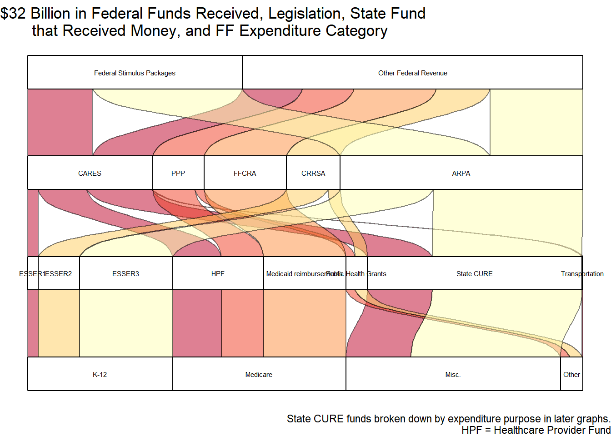
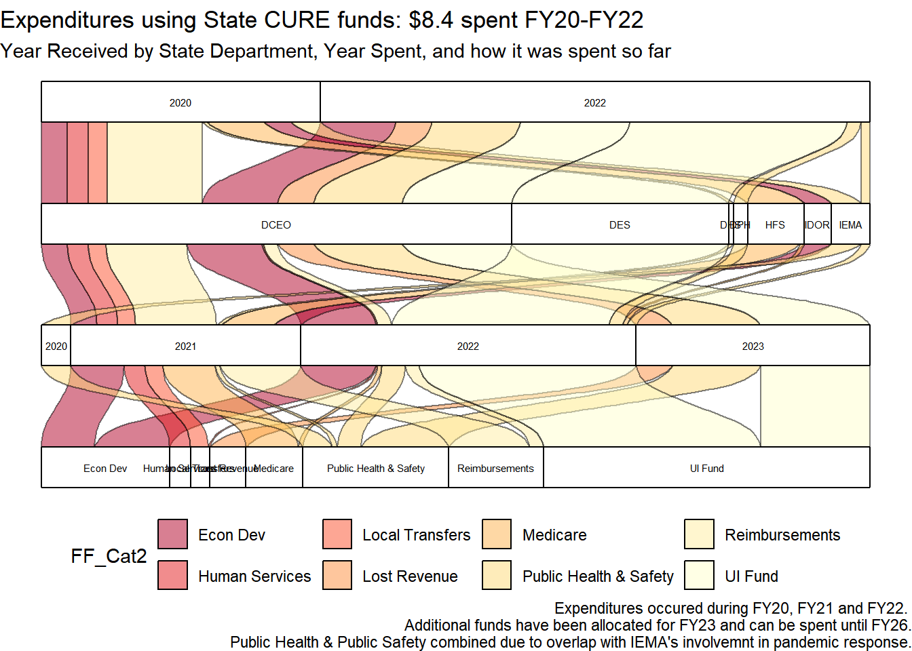
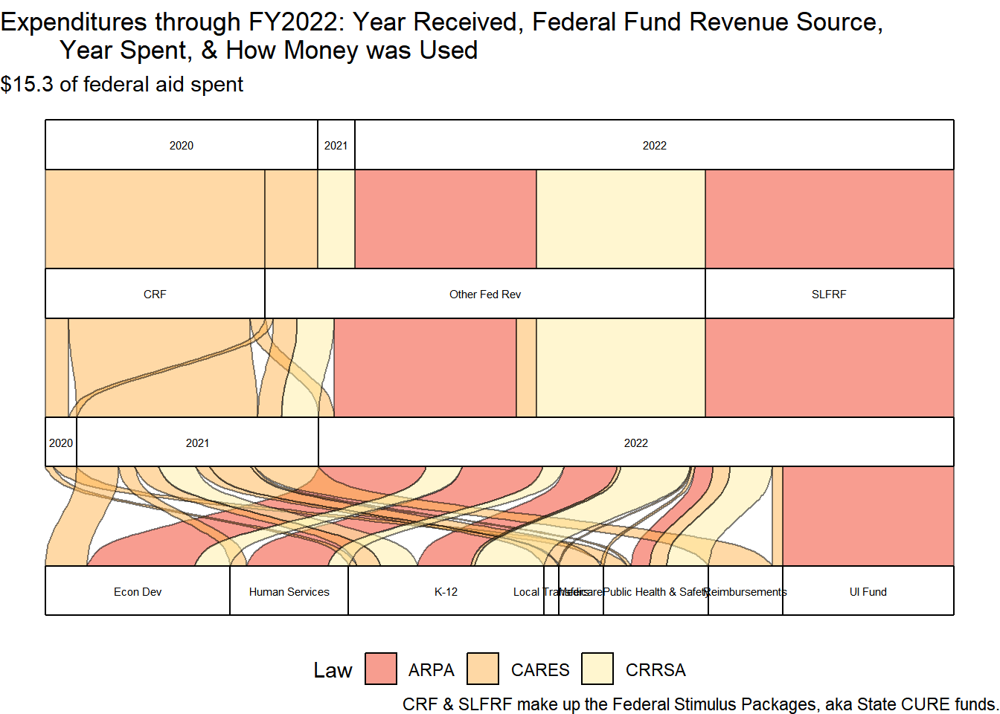
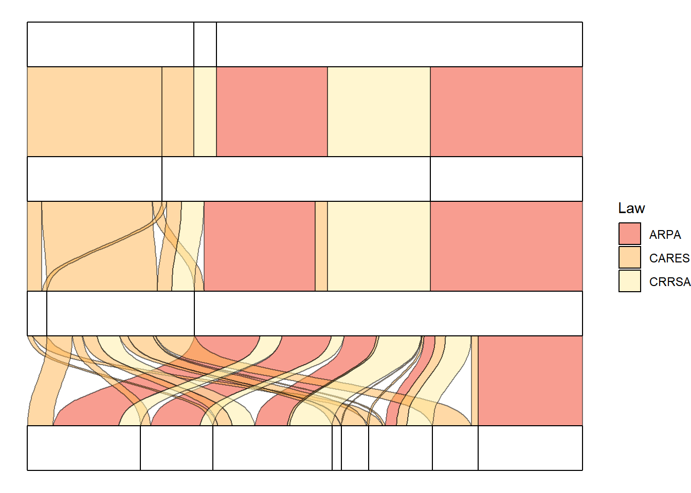
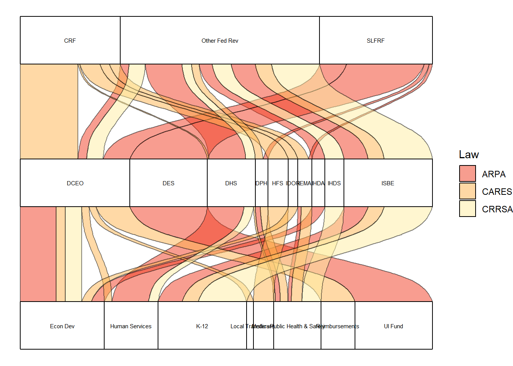
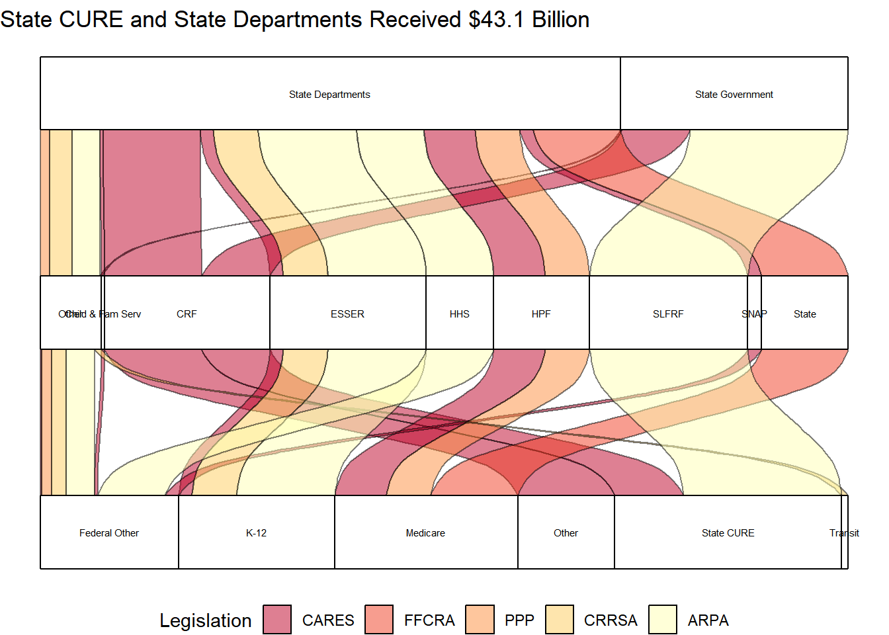

Dropping revenue source “Federal Stimulus Package” from the IOC revenue data is one way to start estimating how revenue will look after the COVID relief ends. The graphs below show Illinois revenue with and without Federal Stimulus Package revenue. It is important to note that only the $8.127 ARPA State CURE and $3.519 CARES CRF/State CURE revenue were labeled as “Federal Stimulus Package” in the IOC revenue data. There was still an additional $12 billion dollars in other federal revenue that went to the state in FY22 compared to FY19. When trying to understand the states finances and the yearly fiscal gap, we also need to understand when and where the funds were considered revenue in the IOC data and consider the fiscal year that the funds were spent. Finally, allocations or expenditures may be grouped and labeled differently by the State compared to the Fiscal Futures project categorization. Some items that the federal relief funds are spent on are not included in Fiscal Gap calculations (e.g. the Unemployment Insurance Trust Fund repayments). The biggest challenge when determining the Fiscal Gap for Illinois centers around the timing of revenue and expenditures occurring in different fiscal years during the COVID response.
Figure 3.1: State CURE expenditures and allocations in the larger context of COVID-related federal revenue.
fedrev %>%filter(source_name_AWM !="FEDERAL STIMULUS PACKAGE"& agency!="799") %>%group_by(fy) %>%summarise(receipts =sum(receipts/1000, na.rm =TRUE)/1000000) %>%ggplot() +geom_line(aes(x=fy, y=receipts)) +theme_bw() +labs(title ="All Federal EXCEPT Federal Stimulus Package", y ="Billions of Dollars", x ="",caption ="Note: Dropping Federal Stimulus Package revenue only removes the $3.519 billion from FY20, $0.23 billion from FY21, and $8.85 billion from FY22. Also drops Great Recession Aid in 2009. There is still $11 billion more in FY22 Federal Revenue compared to FY19.") +theme(legend.position ="bottom", legend.title =element_blank() ) +scale_y_continuous(labels = comma, limits =c(0,45))
Figure 3.2: With and Without State CURE Funds from Federal Stimulus Packages
fedrev %>%filter(fy>2018) %>%# all fed rev after 2018 summed by yeargroup_by(fy) %>%summarize(Revenue =sum(receipts)) %>%mutate_if(is.numeric, round)
fedrev %>%filter(fy>2017) %>%# all fed rev after 2017 summed by year, #gives precovid comparison for referencegroup_by(fy, rev_type_name) %>%summarize(Revenue =sum(receipts))%>%mutate_if(is.numeric, round) %>%pivot_wider(names_from = fy, values_from = Revenue)
fedrev %>%#federal stimulus revenue sources after 2018# this is ONLY the State CURE funds from CARES and ARPAfilter(source_name_AWM =="FEDERAL STIMULUS PACKAGE"& fy>2018) %>%group_by(fy) %>%summarise(receipts =sum(receipts, na.rm =TRUE)/1000000) %>%mutate_if(is.numeric, round)
fedrev %>%filter(fy>2018) %>%group_by(fy, fund_name) %>%# all funds that received moneysummarise(receipts =sum(receipts, na.rm =TRUE)/1000000) %>%arrange(-receipts) %>%pivot_wider(names_from = fy, values_from = receipts) %>%mutate_if(is.numeric, round)
#yearly totals for Fed Med sources abovefedrev %>%# Medicaid reimbursements and healthcare provider fundsfilter(fy>2018, rev_type=="58") %>%group_by(fy) %>%summarise(receipts =sum(receipts, na.rm =TRUE)/1000000) %>%pivot_wider(names_from = fy, values_from = receipts)
3.1 Comptroller Revenue Data
Read the charts from the top to the bottom. Most of the graphs below begin with either the year the money was committed or the name of the Law that provided the funds and then shows it flowing down to either who received the money or how it was spent.
Sankey2023.csv file totals $32 billion flowing into the state. $3.5 came in FY20, $12.6 billion came in FY21 and $16.1 billion in FY22. These values include both the State CURE and other federal grants to state departments for education, health providers, and much more. These observations are based more on the IOC revenue data for revenue received.
Note: $57 million in Federal Transportation dollars are grouped with the billions of other federal revenue for simplified graphs and summaries.
PPP & Health Care Enhancement act contributed to $2.778 billion for Provider Relief Fund. This is considered within the Medicare category in both revenues and expenditures.
Families First Act: $4.469 billion for Medicaid (from Health and Human Services and deposited into Healthcare Provider Relief fund; Data Source IOC revenue data). This fund-revenue source combo grew from $4 billion in 2019, $6 billion in 2020, $7.5 billion in 2021 and $8.4 billion 2022.
CARES & ESSER impacts: Revenue from source “Department of Education-Fed” and deposited into “SBE Federal Dept of Education”. Was $1.45 billion in 2019 and 2020 and grew to $2.26 billion in 2021 and $3.35 billion in 2022.
Note
Variable names in the sankeyattempt2022 file do not have the most useful names due to the information within morphing over time as I figured out the format to necessary for making the graphs. Any variable names used while making these graphs might not actually contain the data one would expect given the variable names. I do intend on renaming the file and changing the variable names and code to something more intuitive but have not had time to complete that task.
According to federal data publicly available, $52 billion has been committed to Illinois (including local governments) but $32 billion has been received by the state at the end of Fiscal Year 2022 (as of June 30, 2022, excluding local governments). An additional $8.86 billion was committed straight to local governments. More money has been received in FY23 but is not focused on in this analysis. To see a graph of federal funds committed to the State, jump to Section 3.4.
Figure 3.3: COVID-related legislation and federal revenue into Illinois
Figure 3.4: Illinois Expenditures and Allocations for $11.6 Billion in State CURE funds
Code
sankey_rev_ioc <-read_csv("./data/sankey2023.csv") %>%filter(StFund =="Total")sankey_rev_ioc <- sankey_rev_ioc %>%select(Federal, FF_Cat, StateFunds, StFund, Expenditures, value, Notes, Notes2, stfundname) %>%filter(StFund =="Total") %>%mutate(value=as.numeric(value),# keeps order of year received from oldest to newest in graphsStateFunds =factor(StateFunds, levels =c("Total_received_fy20","Total_received_fy21", "Total_received_fy22", "Total_received_fy23")),# other includes transit and public health grantsExpenditures_ordered =factor(Expenditures, levels =c("Federal Other", "Other", "K-12", "Medicaid", "Medicare", "Misc.")),FF_Cat_ordered=factor(FF_Cat, levels =c("Other", "Transit", "Medicare","Medicaid", "Federal Other")),Federal_ordered =factor(Federal, levels ="Medicaid", "Medicare", "Federal Other"),# keeps Legislation in chronological order,# groups FFRCA and PPP legislation into Other *, helps simplify some graphs Notes2 =factor(Notes2, levels =c("CARES", "Other *", "CRRSA", "ARPA")),# keeps legislation in chronological orderNotes =factor(Notes, levels =c("CARES", "PPP", "FFCRA","CRRSA", "ARPA")))sankey_rev_ioc %>%filter( Federal =="Federal Stimulus Packages") %>%ggplot( aes(y = value, axis3=FF_Cat, axis2=Expenditures, axis1 = StateFunds, label ="stratum")) +geom_flow(aes(fill = Notes), color ="black", reverse=FALSE) +geom_stratum(reverse=FALSE)+coord_flip()+scale_fill_brewer(palette ="YlOrRd", direction =-1)+theme_void() +theme(legend.position ="bottom") +geom_text(stat ="stratum", aes(label =after_stat(stratum)), size =2, reverse=FALSE)+labs(title ="Over $8 billion in FY22, $11.6 Billion in State CURE total")
Another way to try to understand the use for the federal funds is to look at what grants were received and what expenditure fiscal category they would be included in.
Code
# Color indicates state fund name. this way STate CURE funds are the same color from CARES and ARPAggplot(sankey_rev_ioc, aes(y = value, axis3 = Notes, axis2 = stfundname, axis1=Expenditures_ordered, label ="stratum")) +geom_flow(aes(fill = stfundname), color ="black",reverse=FALSE) +guides(fill =FALSE) +geom_stratum(reverse=FALSE)+coord_flip()+scale_fill_brewer(palette ="YlOrRd", direction =-1)+theme_void() +theme(legend.position="bottom") +geom_text(stat ="stratum", aes(label =after_stat(stratum)), size =2, reverse=FALSE)+labs(title ="Where the State CURE funds came from and other federal revenue received",caption ="State CURE funds broken down by expenditure purpose in later graphs. HPF = Healthcare Provider Fund")
Code
# Color indicates state fund name. this way STate CURE funds are the same color from CARES and ARPAggplot(sankey_rev_ioc, aes(y = value, axis3 = Notes, # axis2 = stfundname, axis1=Expenditures_ordered, label ="stratum")) +geom_flow(aes(fill = StateFunds), color ="black",reverse=FALSE) +guides(fill =FALSE) +geom_stratum(reverse=FALSE)+coord_flip()+scale_fill_brewer(palette ="YlOrRd", direction =1)+theme_void() +theme(legend.position="bottom") +geom_text(stat ="stratum", aes(label =after_stat(stratum)), size =2, reverse=FALSE)+labs(title ="Where the State CURE funds came from and other federal revenue received",caption ="State CURE funds broken down by expenditure purpose in later graphs. HPF = Healthcare Provider Fund")
Code
# Color indicates state fund name. this way State CURE funds are the same color from CARES and ARPAggplot(sankey_rev_ioc, aes(y = value, axis3 = Notes, axis2 = stfundname, axis1=Expenditures_ordered, label ="stratum")) +geom_flow(aes(fill = stfundname), color ="black",reverse=FALSE) +guides(fill =FALSE) +geom_stratum(reverse=FALSE)+coord_flip()+scale_fill_brewer(palette ="YlOrRd", direction =1)+theme_void() +theme(legend.position="bottom") +# geom_text(stat = "stratum", aes(label = after_stat(stratum)), size = 2, reverse=FALSE)+labs(title ="Where the State CURE funds came from and other federal revenue received",caption ="State CURE funds broken down by expenditure purpose in later graphs. HPF = Healthcare Provider Fund")
# Color indicates legislationggplot(sankey_rev_ioc, aes(y = value, axis4 = Federal, axis3 = Notes, axis2 = stfundname, axis1=Expenditures, label ="stratum")) +geom_flow(aes(fill = Notes), color ="black",reverse=FALSE) +guides(fill =FALSE) +geom_stratum(reverse=FALSE)+coord_flip()+scale_fill_brewer(palette ="YlOrRd", direction =-1)+theme_void() +theme(legend.position="bottom") +geom_text(stat ="stratum", aes(label =after_stat(stratum)), size =2, reverse=FALSE)+labs(title ="$32 Billion in Federal Funds Received, Legislation, State Fund that Received Money, and FF Expenditure Category",caption ="State CURE funds broken down by expenditure purpose in later graphs. HPF = Healthcare Provider Fund")
Code
# Same as graph above but gets rid of top axis for federal funds# Color indicates State CURE funds or State Departments grants# ggplot(sankey_rev_ioc, # aes(y = value, axis3 = Notes, axis2 = stfundname, axis1=Expenditures, label = "stratum")) +# geom_flow(aes(fill = Federal), color = "black", reverse=FALSE) +# guides(fill = FALSE) + # geom_stratum(reverse=FALSE)+# coord_flip()+# scale_fill_brewer(palette = "YlOrRd", direction = -1)+# theme(legend.position="bottom") +# # theme_void() + # # geom_text(stat = "stratum", aes(label = after_stat(stratum)), size = 2, reverse=FALSE) +# # labs(title = "$32 Billion in Federal Funds Received, Legislation, State Fund # that Received Money, and FF Expenditure Category",# caption = "State CURE funds broken down by expenditure purpose in later graphs.# HPF = Healthcare Provider Fund.# Color indicates State CURE funds and Grants to State Department.")
Highlights legislation, fund money went into, and its intended purpose using Fiscal Futures expenditure categories. The State CURE expenditures are listed as miscellaneous here but are described in more detail farther below.
Code
# color indicates fundggplot(sankey_rev_ioc, aes(y = value, axis3 = Notes, axis2 = stfundname, axis1=Expenditures, label ="stratum")) +geom_flow(aes(fill = stfundname), color ="black", reverse=FALSE) +geom_stratum(reverse=FALSE)+coord_flip()+scale_fill_brewer(palette ="YlOrRd", direction =-1)+theme_void() +theme(legend.position="bottom") +geom_text(stat ="stratum", aes(label =after_stat(stratum)), size =2,reverse=FALSE) +labs(title ="Legislation that provided funds, state fund receiving revenue, and how funds were used", caption ="State CURE expenditures are not broken down in this image for readibility. Please see graphs focused on State CURE expenditures below.")

Important
Remember: Medicare includes Healthcare Provider Assistance, reimbursements for the Continuous Coverage Mandate, and reimbursements for the Matching Funds Increase. This is different than GOMB categorization.
These revenue graphs label State CURE as being for miscellaneous purposes due to the difficulty of representing that information broken down cleanly in the graphs. To see how ARPA funds (and State CURE funds in general) were spent, jump to Section 3.2.
Note: CARES funds were originally received and spent in Disaster Response & Recovery Fund. In FY22, unspent aid was transferred to the State CURE and then transferred again to state agencies for COVID-related expenditures. Remaining CARES funds were transferred to State CURE fund for FY22. $337 million was also transferred from the Illinois Department of Revenue into the Illinois Housing Development Authority (IHDA). (LBOC June 2021 Report).
3.2 State Expenditure Graphs
Federal expenditures from CURE and other major funds . Uses the fedCUREexpenditures.xlsx file.
This data comes from Illinois Comptroller expenditure data, Legislative Budget Oversight Commission (LBOC) Reports, and the ARPA Annual Recovery Plan detailing the State’s use of State and Local Fiscal Recovery Funds (SLFRF) which is prepared by the Governor’s Office of Management and Budget (GOMB).
Dates on top are Fiscal Year received. Dates in the middle of the graph are Fiscal Year expenditures. Remember, federal funds for COVID recovery have been received and spent in different years.
Revenue from Local Cure is the Local Government Transfers. A small amount of the State CURE was also transferred to local governments ($240 million in FY2021). There was also $700 million ARPA State CURE funds transferred to local governments during FY21 and FY22.
3.2.1 Fiscal Years 2020-2023
During fiscal years 2020 through 2023 $11.03 billion ($8.4 CURE + $3.4266 ESSER) in State CURE and ESSER funds have been spent by the state. An additional $6.9 billion of grants from CARES, CRRSA, and ARPA has been spent by state departments.
Over $9 billion of State CURE funds (includes both CARES Act and ARP Act State Fiscal Recovery Fund) was received in in FY2020-2023 (nearly all of it in FY 2022).
3.2.1.1 CURE Dollars
As of FY23, $6.648 billion of the $9 billion received has been spent. 2.352 billion allocated for the future in FY24 +
Remember: All revenue was recieved in FY22 and the Fiscal Futures model ignores Statutory Transfers to the Fiscal Gap will look negative in FY22 (i.e. it looks “good”) and the gap will be positive in FY23 and beyond (i.e. it looks “bad” because expenses > revenues when ignoring transfers).
CARES State CURE money:
$370 million was spent in the initial pandemic response in the very end of FY2020 and $2.858 billion CARES dollars were spent in FY21.
In FY2022, almost all remaining CARES funds were used up (~250 million).
Around $3.5 billion total spent during FY20-FY22.
ARPA State CURE money:
In FY22, $4.9 billion (of $8.127 billion received) ARPA-State CURE dollars were spent:
$2.7 billion for repaying unemployment insurance trust fund, $1 billion transferred to the general revenue fund to make up for any lost revenue caused by the pandemic (aka “Essential Government Services”), and $1.23 billion on other programs and services (e.g. hospital stability payments, operational expenses, back to business grants and economic development).
In FY23, $2.47 billion spent:
1.36 billion for UI Trust fund repayment, and $1.1 billion on additional areas: $212 million for nursing home financial assistance, $150 million for affordable housing grants, plus many more
As of the end of FY23, $8.01 billion of State CURE funds have been spent
Values presented in LBOC documents for the end of FY22 are slightly different than the values calculated using IOC expenditure data. IOC expenditure data includes all lag period expenditures through October so values are slightly higher than end of June calculations.
K-12 Spending and ESSER Money
$3.4266 billion Total spent through FY23 from ARP and ESSER Funds. - 1.694 billion spent in 2023 (ARP = ESSER III) but that money arrived in 2022 (=> Fiscal Gap Implications!)
$2.34 Billion of ARP Emergency Relief Funds (aka ESSER III) spent in 2022 and 2023 combined
583 million for ESSER II in 2021
376 million with ESSER I in 2021 and 128 million in 2020.
ISBE received around an additional $7.9 billion total from ESSER compared to its normal federal funding because of COVID
At end of State’s FY23, $3.43/$7.9 billion = ~ 50% spent
As of Dec.7th, it has spent 74.1% of these funds (“ESSER Spending Dashboard” 2023)
640 million allocated for FY24 (according to CPS, I think they have fiscal years though…)
Code chunk below is for State CURE funds spent through FY 2022.
Code
# State CURE only, # without 2023 allocationscure_exp2023 %>%filter(State_local =="State CURE") %>%# for only state CURE fundsggplot(aes(y =`FY Expenditures`, axis4 = FY_Received, axis3 =`Agency`, axis2 = FY_Spent, axis1=FF_Cat2, label ="stratum")) +geom_flow(aes(fill = FF_Cat2), color ="black", reverse=FALSE) +geom_stratum(reverse=FALSE)+coord_flip()+scale_fill_brewer(palette ="YlOrRd", direction =-1)+theme_void() +theme(legend.position="bottom")+geom_text(stat ="stratum", aes(label =after_stat(stratum)), size =2, reverse=FALSE) +labs(title ="Expenditures using State CURE funds: $8.4 spent FY20-FY22", subtitle ="Year Received by State Department, Year Spent, and how it was spent so far", caption ="Expenditures occured during FY20, FY21 and FY22. Additional funds have been allocated for FY23 and can be spent until FY26. Public Health & Public Safety combined due to overlap with IEMA's involvemnt in pandemic response.")
Code
## State CURE only# through FY23cure_exp2023 %>%filter(State_local =="State CURE") %>%ggplot(aes(y =`FY Expenditures`, axis3 =`State_local2`, axis2 = Agency_grouped, axis1=FF_Cat2, label ="stratum"))+geom_flow(aes(fill = Law), color ="black", reverse=FALSE) +geom_stratum(reverse=FALSE)+coord_flip()+scale_fill_brewer(palette ="YlOrRd", direction =-1)+theme_void() +theme(legend.position="bottom")+geom_text(stat ="stratum", aes(label =after_stat(stratum)), size =2, reverse=FALSE) +theme(legend.position="bottom")+labs(title ="State CURE Expenditures: Department that Received Revenue & Purpose of Expenditure",subtitle ="$8.4 billion spent by end of FY22")
Code
cure_exp2023 %>%#expenditures for State government (with CURE $) and state departmentsgroup_by(State_local2)%>%summarize(Expenditures=sum(`FY Expenditures`))
Code
# State CURE & ESSER grantscure_exp2023 %>%# total expenditures summarize(Expenditures=sum(`FY Expenditures`))
Major uses of the State CURE funds include $2.7 billion for repaying the unemployment insurance trust fund deficit, $1 billion was transferred to general revenue to make up for lost revenue during the pandemic, $1.2 billion was transferred to multiple funds for reimbursements of pandemic response related expenses, $705 million for Public Healthcare Providers (within Medicare), and over $1.5 billion has gone toward various forms of economic recovery and development.
Multiple billions of dollars of spending were funded with other federal grants. For example, some CRRSA dollars were spent in FY22: $1.1 billion ESSER II, $332 million from a child care development block grant, $349 million for housing stability, and $664 million for other public health services like testing and contact tracing.
# ESSER Expenditures per year# from simplified file, not the IOC expenditure filecure_exp2023 %>%filter(Fund =="ESSER") %>%group_by(`FY_Spent`)%>%summarize(Expenditures=sum(`FY Expenditures`))
#4 levels with labels# all federal funds in cure_exp file through 2022ggplot(cure_exp2023, aes(y =`FY Expenditures`, axis4 =`FY_Received`, axis3 =`Federal Funds`, axis2 = FY_Spent, axis1=FF_Cat2, label ="stratum")) +geom_flow(aes(fill = Law), color ="black", reverse=FALSE) +geom_stratum(reverse=FALSE)+coord_flip()+scale_fill_brewer(palette ="YlOrRd", direction =-1)+theme_void() +geom_text(stat ="stratum", aes(label =after_stat(stratum)), size =2, reverse=FALSE) +theme(legend.position="bottom")+labs( title ="Expenditures through FY2023: Year Received, Federal Fund Revenue Source, Year Spent, & How Money was Used",subtitle ="$15.3 of federal aid spent",caption ="CRF & SLFRF make up the Federal Stimulus Packages, aka State CURE funds.")

In FY21, $1.8 billion from the CARES-State CURE went to operations and grants for programs and services (e.g. business interruptions, child care grants, healthcare providers, rent/mortgage assistance, public health response, etc.), $1 billion was transferred to other Agencies for reimbursing pandemic related costs, and $569 million CARES-ESSER I funds for K-12 education.
Approximately $3.08 billion of the ESSER funds had been spent through FY 2022 (of the $7.88 billion received from ESSER I, II, and III received) and in FY 2022 alone, the Illinois School Board for Education received over $5 billion from ARPA-ESSER III and spent under $1 billion of it that fiscal year. These unspent funds do roll over to the next fiscal year but must be used by 2024. Around $4 billion remain.
According to the ISBE Spending Dashboard as of February 2, 2023, $1.6 billion of ESSER II and $1.6 billion of ESSER III funds have been spent so far. ESSER I has been nearly completely spent, ISBE has spent 79% of its ESSER II allocations and has spent 33% of its ESSER III allocations.
Code
# all funds through FY22 spent# Year Spent, Agency received, FF Spending Category ggplot(cure_exp2023, aes(y =`FY Expenditures`, axis3 = FY_Spent, axis2 = Agency, axis1=FF_Cat2, label ="stratum")) +geom_flow(aes(fill = Law), color ="black", reverse=FALSE) +geom_stratum(reverse=FALSE)+#geom_text(stat = "stratum", label.strata = TRUE, reverse=FALSE) + coord_flip()+scale_fill_brewer(palette ="YlOrRd", direction =-1)+geom_text(stat ="stratum", aes(label =after_stat(stratum)), size =2, reverse=FALSE)+theme_void() +theme(legend.position="bottom")+labs( title ="CURE, ESSER, and other Federal Grants = $15.3 Billion Spent FY20-FY23", subtitle ="Year Spent, Agency that Spent it & FF Spending Category")
$500 million spent in FY2020 (CARES State CURE & CARES-ESSER I)
$3.82 billion spent in FY2021 (CARES State CURE, CRRSA-ESSER II,… )
$11.03 billion spent in FY 2022 (remaining $0.5 billion CARES-State CURE, $5.2 billion from ARPA-State CURE, $2 billion from ESSER II & III, plus other funds from federal grants to state agencies).
During fiscal years 2020 through 2022 $11.03 billion ($8.4 CURE + $3.082 ESSER) in State CURE and ESSER funds have been spent by the state. An additional $6.9 billion of grants from CARES, CRRSA, and ARPA has been spent by state departments.
So far, over $8.4 billion of the State CURE funds (includes both CARES Act and ARP Act State Fiscal Recovery Fund) have been spent in FY2020-2022.
CARES State CURE money:
$370 million was spent in the initial pandemic response in the very end of FY2020 and $2.858 billion CARES dollars were spent in FY21.
In FY2022, almost all remaining CARES funds were used up (~250 million).
Around $3.5 billion total spent during FY20-FY22.
ARPA State CURE money:
In FY22, $4.9 billion (of $8.127 billion received) ARPA-State CURE dollars were spent:
$2.7 billion for repaying unemployment insurance trust fund, $1 billion transferred to the general revenue fund to make up for any lost revenue caused by the pandemic, and $1.23 billion on other programs and services (e.g. hospital stability payments, operational expenses, back to business grants and economic development).
Values presented in LBOC documents for the end of FY22 are slightly different than the values calculated using IOC expenditure data. IOC expenditure data includes all lag period expenditures through October so values are slightly higher than end of June calculations.
Code chunk below is for State CURE funds spent through FY 2022.
Code
# State CURE only, # without 2023 allocationscure_exp2022 %>%filter(State_local =="State CURE") %>%# for only state CURE fundsggplot(aes(y =`FY Expenditures`, axis4 = FY_Received, axis3 =`Agency`, axis2 = FY_Spent, axis1=FF_Cat2, label ="stratum")) +geom_flow(aes(fill = FF_Cat2), color ="black", reverse=FALSE) +geom_stratum(reverse=FALSE)+coord_flip()+scale_fill_brewer(palette ="YlOrRd", direction =-1)+theme_void() +theme(legend.position="bottom")+geom_text(stat ="stratum", aes(label =after_stat(stratum)), size =2, reverse=FALSE) +labs(title ="Expenditures using State CURE funds: $8.4 spent FY20-FY22", subtitle ="Year Received by State Department, Year Spent, and how it was spent so far", caption ="Expenditures occured during FY20, FY21 and FY22. Additional funds have been allocated for FY23 and can be spent until FY26. Public Health & Public Safety combined due to overlap with IEMA's involvemnt in pandemic response.")
Code
## State CURE only# through FY22cure_exp2022 %>%filter(State_local =="State CURE") %>%ggplot(aes(y =`FY Expenditures`, axis3 =`State_local2`, axis2 = Agency_grouped, axis1=FF_Cat2, label ="stratum"))+geom_flow(aes(fill = Law), color ="black", reverse=FALSE) +geom_stratum(reverse=FALSE)+coord_flip()+scale_fill_brewer(palette ="YlOrRd", direction =-1)+theme_void() +theme(legend.position="bottom")+geom_text(stat ="stratum", aes(label =after_stat(stratum)), size =2, reverse=FALSE) +theme(legend.position="bottom")+labs(title ="State CURE Expenditures: Department that Received Revenue & Purpose of Expenditure",subtitle ="$8.4 billion spent by end of FY22")
Code
cure_exp2022 %>%#expenditures for State government (with CURE $) and state departmentsgroup_by(State_local2)%>%summarize(Expenditures=sum(`FY Expenditures`))
Code
# State CURE & ESSER grantscure_exp2022%>%# total expenditures summarize(Expenditures=sum(`FY Expenditures`))
Major uses of the State CURE funds include $2.7 billion for repaying the unemployment insurance trust fund deficit, $1 billion was transferred to general revenue to make up for lost revenue during the pandemic, $1.2 billion was transferred to multiple funds for reimbursements of pandemic response related expenses, $705 million for Public Healthcare Providers (within Medicare), and over $1.5 billion has gone toward various forms of economic recovery and development.
Multiple billions of dollars of spending were funded with other federal grants. For example, some CRRSA dollars were spent in FY22: $1.1 billion ESSER II, $332 million from a child care development block grant, $349 million for housing stability, and $664 million for other public health services like testing and contact tracing.
# ESSER Expenditures per year# from simplified file, not the IOC expenditure filecure_exp2022 %>%filter(Fund =="ESSER") %>%group_by(`FY_Spent`)%>%summarize(Expenditures=sum(`FY Expenditures`))
#4 levels with labels# all federal funds in cure_exp file through 2022ggplot(cure_exp2022, aes(y =`FY Expenditures`, axis4 =`FY_Received`, axis3 =`Federal Funds`, axis2 = FY_Spent, axis1=FF_Cat2, label ="stratum")) +geom_flow(aes(fill = Law), color ="black", reverse=FALSE) +geom_stratum(reverse=FALSE)+coord_flip()+scale_fill_brewer(palette ="YlOrRd", direction =-1)+theme_void() +geom_text(stat ="stratum", aes(label =after_stat(stratum)), size =2, reverse=FALSE) +theme(legend.position="bottom")+labs( title ="Expenditures through FY2022: Year Received, Federal Fund Revenue Source, Year Spent, & How Money was Used",subtitle ="$15.3 of federal aid spent",caption ="CRF & SLFRF make up the Federal Stimulus Packages, aka State CURE funds.")
In FY21, $1.8 billion from the CARES-State CURE went to operations and grants for programs and services (e.g. business interruptions, child care grants, healthcare providers, rent/mortgage assistance, public health response, etc.), $1 billion was transferred to other Agencies for reimbursing pandemic related costs, and $569 million CARES-ESSER I funds for K-12 education.
Approximately $3.08 billion of the ESSER funds had been spent through FY 2022 (of the $7.88 billion received from ESSER I, II, and III received) and in FY 2022 alone, the Illinois School Board for Education received over $5 billion from ARPA-ESSER III and spent under $1 billion of it that fiscal year. These unspent funds do roll over to the next fiscal year but must be used by 2024. Around $4 billion remain.
According to the ISBE Spending Dashboard as of February 2, 2023, $1.6 billion of ESSER II and $1.6 billion of ESSER III funds have been spent so far. ESSER I has been nearly completely spent, ISBE has spent 79% of its ESSER II allocations and has spent 33% of its ESSER III allocations.
Code
# all funds through FY22 spent# Year Spent, Agency received, FF Spending Category ggplot(cure_exp2022, aes(y =`FY Expenditures`, axis3 = FY_Spent, axis2 = Agency, axis1=FF_Cat2, label ="stratum")) +geom_flow(aes(fill = Law), color ="black", reverse=FALSE) +geom_stratum(reverse=FALSE)+#geom_text(stat = "stratum", label.strata = TRUE, reverse=FALSE) + coord_flip()+scale_fill_brewer(palette ="YlOrRd", direction =-1)+geom_text(stat ="stratum", aes(label =after_stat(stratum)), size =2, reverse=FALSE)+theme_void() +theme(legend.position="bottom")+labs( title ="CURE, ESSER, and other Federal Grants = $15.3 Billion Spent FY20-FY22", subtitle ="Year Spent, Agency that Spent it & FF Spending Category")

$500 million spent in FY2020 (CARES State CURE & CARES-ESSER I)
$3.82 billion spent in FY2021 (CARES State CURE, CRRSA-ESSER II,… )
$11.03 billion spent in FY 2022 (remaining $0.5 billion CARES-State CURE, $5.2 billion from ARPA-State CURE, $2 billion from ESSER II & III, plus other funds from federal grants to state agencies).
3.2.3 State CURE Expenditures with FY2023 and beyond allocations
Graphs below include how money has been spent through FY22 with unspent funds labeled as FY2023+. Only State CURE funds are included. ESSER and other federal grants to state departments are excluded. Funds may be used for expenses obligated through December 31, 2024 and expended by December 31, 2026.
An additional $254 million is expected to come to Illinois from the Coronavirus Capital Projects Fund to be used for Connect Illinois broadband projects (GOMB December 2022 LBOC report). This has been left out of all graphs and summaries.
$3.54 Billion received in FY20 for State Fiscal Recovery Fund (SFRF)+ $11.8 billion received in FY22 = $15.3 billion total expenditures and allocations included in this image.
Around $10.8 billion has gone into the State CURE fund (Coronavirus Relief Funds (CRF) and SFRF into the State CURE fund) and another $4.5 billion was received by State Departments (mostly ISBE for K-12 )
So far, over $13 billion has been spent.
$2.7 billion was spent in FY21 and $8.5 Billion was spent in FY22.
The remaining $2 Billion State CURE funds have been fully allocated and some have been spent already in FY23 ($500 million transferred to General Revenue for “Lost Revenue” during COVID disruption, remaining dollars on programs and services).
cure_exp2023 %>%filter(State_local =="State CURE") %>%ggplot(aes(y = pct, axis4 = FY_Received, axis3 = Agency, axis2 = FY_Spent, axis1 = FF_Cat)) +geom_flow(aes(fill = Law), color ="black", reverse=FALSE) +geom_stratum(reverse=FALSE)+scale_fill_brewer(palette ="YlOrRd", direction =-1)+coord_flip()+theme_void() +theme(legend.position="bottom")+# geom_text(stat = "stratum", aes(label = after_stat(stratum)), size = 2, reverse=FALSE) +geom_text(aes(label =paste0(..stratum.., "\n", scales::percent(..count.., accuracy = .1))), stat ="stratum", reverse=FALSE, size=2) +# geom_text(stat = "stratum", aes(label = scales::dollar(after_stat(stratum),accuracy =0.01)), size = 2, nudge_x = 0.4) +labs(title ="Expenditures & Allocations of State CURE fund = 11.6 Billion", subtitle ="Year Received by State Department, Year Spent, and Expenditure Purpose", caption ="Expenditures occured during FY20, FY21 and FY22. Additional funds will continue to be spent in FY23-FY26.")

Code
cure_exp2023 %>%filter(State_local =="State CURE") %>%ggplot(aes(y =round(`FY Expenditures`, digits=2), axis4 = FY_Received, axis3 = Agency_grouped, axis2 = FY_Spent, axis1 = FF_Cat2)) +geom_flow(aes(fill = Law), color ="black", reverse=FALSE) +geom_stratum(reverse=FALSE)+scale_fill_brewer(palette ="YlOrRd", direction =-1)+coord_flip()+theme_void() +theme(legend.position="bottom")+geom_text(stat ="stratum", aes(label =after_stat(stratum)), size =2, reverse=FALSE) +# geom_text(aes(label = paste0(..stratum.., "\n", scales::percent(..count.., accuracy = .1))), stat = "stratum") +# geom_text(stat = "stratum", aes(label = scales::dollar(after_stat(stratum),accuracy =0.01)), size = 2, nudge_x = 0.4) +labs(title ="(Same as above but without percentages)Expenditures using State CURE funds", subtitle ="Year Received by State Department, Year Spent, and how it was spent so far", caption ="Expenditures occured during FY21 and FY22. Additional funds will continue to be spent in FY23-FY26.")

Code
#5 levels with labelsggplot(cure_exp2023, aes(y =`FY Expenditures`, axis6 =`Federal Funds`, axis5=State_local2, # axis4 = `FY_Received`,axis3 = Agency_grouped, axis2 = FY_Spent, axis1=FF_Cat2, label ="stratum")) +geom_flow(aes(fill = Law), color ="black", reverse=FALSE) +geom_stratum(reverse=FALSE)+coord_flip()+scale_fill_brewer(palette ="YlOrRd", direction =-1)+theme_void() +theme(legend.position ="bottom")+geom_text(stat ="stratum", aes(label =after_stat(stratum)), size =2, reverse=FALSE) +labs(title ="$11.6 Billion in Expenditures and Allocations from Federal Stimulus Packages",subtitle ="Only State CURE funds are included in image")
Code
#5 levels with labelsggplot(cure_exp2023, aes(y =`FY Expenditures`, axis6 =`Federal Funds`, axis5=State_local2, axis3 = Agency_grouped, axis2 = FY_Spent, axis1=FF_Cat2, label ="stratum")) +geom_flow(aes(fill = FY_Spent), color ="black", reverse=FALSE) +geom_stratum(reverse=FALSE)+coord_flip()+scale_fill_brewer(palette ="YlOrRd", direction =-1)+theme_void() +theme(legend.position ="bottom")+geom_text(stat ="stratum", aes(label =after_stat(stratum)), size =2, reverse=FALSE) +labs(title ="$11.6 Billion in Expenditures and Allocations from Federal Stimulus Packages",subtitle ="Only State CURE funds are included in image")
Code
#4 levels with labels# State CURE funds onlycure_exp2023 %>%filter(State_local2 =="State") %>%ggplot(aes(y =`FY Expenditures`, axis4 =`Federal Funds`, axis3 = Agency_grouped, axis2 = FY_Spent, axis1=FF_Cat2, label ="stratum")) +geom_flow(aes(fill = Law), color ="black", reverse=FALSE) +geom_stratum(reverse=FALSE)+coord_flip()+scale_fill_brewer(palette ="YlOrRd", direction =-1)+theme_void() +theme(legend.position ="bottom")+geom_text(stat ="stratum", aes(label =after_stat(stratum)), size =2, reverse=FALSE) +labs(title ="$11.6 Billion in Expenditures and Allocations from Federal Stimulus Packages", caption =" Expenditures and Allocations match State CURE revenues from CARES and ARP Acts.")
Code
cure_exp2023 %>%filter(State_local =="State CURE") %>%# for only state CURE fundsggplot(aes(y =`FY Expenditures`, axis4 = FY_Received, axis3 =`Agency`, axis2 = FY_Spent, axis1=FF_Cat2, label ="stratum")) +geom_flow(aes(fill = FF_Cat2), color ="black", reverse=FALSE) +geom_stratum(reverse=FALSE)+coord_flip()+scale_fill_brewer(palette ="YlOrRd", direction =-1)+theme_void() +theme(legend.position="bottom", legend.title =element_blank())+geom_text(stat ="stratum", aes(label =after_stat(stratum)), size =2, reverse=FALSE) +labs(title ="Expenditures using State CURE funds: $8.4 of $11.6 Billion spent FY20-FY22", subtitle ="Year Received by State Department, Year Spent, and how it was spent so far", caption ="Public Health & Public Safety combined due to overlap with IEMA's involvemnt in pandemic response.")
Code
cure_exp2023 %>%filter(State_local =="State CURE") %>%# for only state CURE fundsggplot(aes(y =`FY Expenditures`, axis4 = FY_Received, axis2 = FY_Spent, axis1=FF_Cat2, label ="stratum")) +geom_flow(aes(fill = FF_Cat2), color ="black", reverse=FALSE) +geom_stratum(reverse=FALSE)+coord_flip()+scale_fill_brewer(palette ="YlOrRd", direction =-1)+theme_void() +theme(legend.position="bottom", legend.title =element_blank())+geom_text(stat ="stratum", aes(label =after_stat(stratum)), size =2, reverse=FALSE) +labs(title ="Expenditures using State CURE funds: $8.4 of $11.6 Billion spent FY20-FY22", subtitle ="Year Received by State Department, Year Spent, and how it was spent so far", caption ="Public Health & Public Safety combined due to overlap with IEMA's involvemnt in pandemic response.")
spending_plot <-ggplot(cure_exp2023, aes(y =`FY Expenditures`, axis3 =`State_local2`, axis2 = FY_Spent, axis1=FF_Cat2, label ="stratum")) +geom_flow(aes(fill = Law), color ="black", reverse=FALSE) +geom_stratum(reverse=FALSE)+coord_flip()+scale_fill_manual(values =c("#B10026", "#FFFFCC"))+# scale_fill_brewer(palette = "YlOrRd")+theme_void() +theme(legend.position ="bottom", legend.title =element_blank())+geom_text(stat ="stratum", aes(label =after_stat(stratum)), size =2, reverse=FALSE) +labs(title ="ARPA & CARES State CURE funds, Year Spent/Allocated, and Purpose of Expendture",caption ="Purpose of Expenditures using Fiscal Futures Categorization. The UI Trust Fund repayments and FY23+ allocations are not included in the Fiscal Gap calculation.")spending_plot
Code
ggplot(cure_exp2023, aes(y =`FY Expenditures`, axis3 =`State_local2`, axis2 = FY_Spent, axis1=FF_Cat2, label ="stratum")) +geom_flow(aes(fill = Law), color ="black", reverse=FALSE) +geom_stratum(reverse=FALSE)+coord_flip()+scale_fill_manual(values =c("#B10026", "#FFFFCC"))+theme_void() +theme(legend.position ="bottom", legend.title =element_blank())+labs(title ="ARPA & CARES State CURE funds, Year Spent/Allocated, and Purpose of Expendture")
Purpose of Expenditures using Fiscal Futures Categorization. The UI Trust Fund repayments and FY23+ allocations are not included in the Fiscal Gap calculation.
3.3 Revenue & Expenditures Before and During COVID Response
Looking at Federal Revenue received right before and during the pandemic:
All revenue sources within “Federal - Other” source.
Note: Increased Matching Grant and Medicaid Continuous Coverage Requirement dollars all count as Federal Medicare Revenue.
Code
# all Federal revenue source observations after 2018rev_temp %>%filter(rev_type =="57"& fy >2018) %>%group_by(fund_name, source_name_AWM, fy) %>%summarize(receipts =sum(receipts)) %>%arrange(fy, -receipts) %>%pivot_wider(names_from = fy, values_from = receipts)
Code
# brought all federal revenue into a separate dataframe to look at it more closelyfed_rev_compare <- rev_temp %>%filter((rev_type =="57"| rev_type =="58"| rev_type =="59") & (fy ==2022| fy==2021| fy==2020| fy ==2019)) %>%arrange(-receipts)# write_csv(fed_rev_compare, "comparefedrev.csv")# all Federal Stimulus Package revenue sources# State CURE items from CARES and ARPA & Great Recession federal aidrev_temp %>%filter(source_name_AWM =="FEDERAL STIMULUS PACKAGE") %>%group_by(fy, fund_name) %>%summarize(receipts =sum(receipts)) %>%arrange(-fy)
# looks at ISBE federal funding after 2018# gives a sort of base comparison of funding before pandemic# ESSER revenue sources had multiple source names so lots of scrolling and CTRL-F searching was donerev_temp %>%filter(rev_type =="57"& fy >2018& fund_name =="SBE FEDERAL DEPT OF EDUCATION") %>%group_by(source_name_AWM , fund_name, fy) %>%summarize(receipts =sum(receipts)) %>%arrange(-receipts)
## Looking at ESSER funds spent per year## exp_temp %>%filter(fy >2018& fund_name =="SBE FEDERAL DEPT OF EDUCATION"& agency_name =="STATE BOARD OF EDUCATION") %>%group_by(wh_approp_name) %>%summarize(expenditures =sum(expenditure))
3.4 COVID Money Tracker Data - Dollars Committed To Illinois
Data was downloaded from COVIDMoneyTracker.org for the State of Illinois. Values reflect the amount committed and not all funds have been disbursed yet. It does not include aid for households or loans to businesses. Data file is named federalcoviddollars.xlsx in Github page used to create this website.
Pivot tables were made in Excel first and then code was written to make the process easier to replicate.
If the only filter applied is State == Illinois, total Committed is over $152 billion.
Level 2 != Direct Payments (the stimulus checks)
Disbursement type != Loan or Aid to Individual
Code
CMT_data <-read_excel(covidmoneytracker_20221209.xlsx, sheet ="Illinois_data")recipienttype_remove <- ("Financial Sector", "Large Business", "Pharmaceutical & Biotech")programs_keep <-c("Capital Investment Grants Program","Child Care & Development Block Grant","Child Care Stabilization Grant Program", "Coronavirus State and Local Fiscal Recovery Funds","Economic Injury Disaster Loan Advance","Education Stabilization Fund","Emergency Assistance for Non-Public Schools","Federal Transit Administration","Payroll Support Program","Restaurant Revitalization Fund","State Small Business Credit Initiative","Supplemental Nutrition Assistance Program","Temporary Assistance for Needy Families","Community Services Block Grant","Coronavirus Relief Fund","Governor's Emergency Education Relief Fund (part of Education Stabilization Fund)","Payroll Support Program","Supplemental Nutrition Assistance Program", "Unemployment Insurance", "Medicaid")CMT_data %>%filter(`Recipient State`=="Illinois"&!`Recipient Type`%in% recipienttype_remove &!`Level 3`%in% programs_keep & (`Disbursement Type`!="Aid to Individual"|`Disbursement Type`!="Loan") )# Coded local governments and state governments in State_local variable# Code State Departments vs State Government & Local# Gets close but not a perfect match.
3.4.1 Committed Totals - Including Local Governments
The graphs below focus on when the money from each Federal Act arrived and where it was received (local governments, the State government, or directly to a state department) and the spending category that it would be considered using the Fiscal Futures categorization. The State government received $11.7 billion, state departments received $31.4 billion, and local governments received $8.9 billion between FY 2020 and FY 2022. Not all funds have been distributed by the federal government, but they have been committed on the federal level and allocated on the state level.
The $52 billion total includes Illinois state and local governments (counties, cities, universities, and transit districts) and healthcare providers in the state. Other forms of federal assistance are not included in the totals or graphs (i.e. stimulus checks, unemployment insurance assistance for individuals, and the Paycheck Protection Program are excluded from these totals). Summed values from COVIDmoneytracker.org and LBOC December 2022 report match.
Legislation total funds (when including local government aid) were: ARPA = $25.6 Billion; CARES = $15.7 Billion; Families First = $4.5 Billion; PPP & Health Care = $2.8 Billion; Response & Relief = $3.4 Billion.
Old image - Federal Transportation amount is incorrect and should be part of Local Transfers.
Local Governments within Illinois received $8.9 billion for economic recovery but we do not include funds given straight to localities in our State COVID recovery fund calculations or Fiscal Gap analysis.
Additional labels were added using Publisher to create the image above. Preliminary graphs and summed values for the image are calculated in the code chunk below:
Illinois received $11.6 billion dollars from State Fiscal Recovery Funds into its State CURE fund and also received $31.4 billion in other federal revenue to Illinois State departments. This other federal revenue frequently came in the form of increased or new grants to many State Departments that normally receive federal funding.
3.4.2 Committed Totals - Excluding Local Government Funds
Below is a graph showing federal stimulus money that was committed in each year, the federal agency/fund that it came from, and what kind of revenue it was considered (Federal Other, transportation, or medicaid) who received the money (e.g. the State of Illinois, Department of Human Services, Local Governments, etc.). Again, these graphs show the funds that were committed to Illinois and their intended purpose, NOT the data on how or when it was spent.
When Local Funds are included, $15.7 billion was received in FY20, $7.24 billion in FY21, and $29 billion was received in FY22 from multiple COVID response Federal Acts.
Around $43 billion went to the state and $8.8 billion went to straight to local governments. When excluding the money that went straight to local governments, the state received $12.7 billion in FY20 (CARES Act), $7.24 billion in FY21, and $23 billion was committed in FY22 (ARP Act). This includes both State CURE funds that had more flexibility in how they were spent as well as the grants and that went to State Departments for specific purposes.
The code below creates same graph as above but funds that went straight to Local Governments (cities and counties) are dropped from the totals.
sankey %>%filter(FF_Cat2!="Excluded") %>%ggplot(aes(y =`Dollars Received`, axis3 = FY, axis2 =`Broad Category`, axis1=FF_Cat2, label ="stratum")) +geom_flow(aes(fill = Legislation), color ="black", reverse=FALSE) +# guides(fill = FALSE) + geom_stratum(reverse=FALSE)+coord_flip()+scale_fill_brewer(palette ="YlOrRd", direction =-1)+theme_void() +geom_text(stat ="stratum", aes(label =after_stat(stratum)), size =2, reverse=FALSE)+theme(legend.position ="bottom")+ggtitle("Without Local government relief: $12.7 Billion in FY20, $7 Billion in FY21, and $23 Billion in FY22 Committed to Illinois")

sankey %>%filter(FF_Cat2!="Excluded") %>%ggplot(aes(y =`Dollars Received`, axis4 = FY, axis3=`Category`, axis1=FF_Cat2# , label = "stratum" )) +geom_flow(aes(fill = Legislation, label ="flow"), color ="black", reverse=FALSE) +# guides(fill = FALSE) + geom_stratum(reverse=FALSE)+geom_text(stat ="stratum", aes(label =after_stat(stratum)), size =3, reverse=FALSE)+coord_flip()+scale_fill_brewer(palette ="YlOrRd", direction =-1)+theme_void() +theme(legend.position ="bottom", legend.title=element_blank())+ggtitle("Without Local government relief: $12.7 Billion in FY20, $7.3 Billion in FY21, and $21.5 Billion in FY22 Committed to Illinois")
# without local government CURE fundssankey %>%filter(FF_Cat2 !="Excluded") %>%group_by(FY)%>%summarize(TotalReceived=sum(`Dollars Received`))
The axis is how the observations are grouped at each step. There are multiple axes.
Strata are the options that exist for each level. (e.g. Year received can be 2021 or 2022)
Alluvium correspond to the fixed value of each axis variable. Proportional to how the sum of however you are grouping your data.
Flows are the segments of the alluvia between adjacent axes.
Source Code
# Federal COVID Money Received {#sec-covid-federal-funds}```{r setup}#| warning: false#| message: false#| echo: falseknitr::opts_chunk$set(warning=FALSE, message =FALSE)library(tidyverse)library(haven)#install.packages("ggsankey")#install.packages("ggalluvial")library(lubridate)library(smooth)library(forecast)library(scales)library(ggplot2)library(readxl)library(tidyverse)library(data.table)library(quantmod)library(geofacet)library(fredr)library(sf) library(usmap)library(janitor)library(RColorBrewer)#library(ggsankey)library(ggalluvial)library(readxl)comma <-function(x) format(x, digits =2, big.mark =",")options(scipen =999)```Dropping revenue source "Federal Stimulus Package" from the IOC revenue data is one way to start estimating how revenue will look after the COVID relief ends. The graphs below show Illinois revenue with and without Federal Stimulus Package revenue. It is important to note that only the \$8.127 ARPA State CURE and \$3.519 CARES CRF/State CURE revenue were labeled as "Federal Stimulus Package" in the IOC revenue data. There was still an additional \$12 billion dollars in other federal revenue that went to the state in FY22 compared to FY19. When trying to understand the states finances and the yearly fiscal gap, we also need to understand when and where the funds were considered revenue in the IOC data and consider the fiscal year that the funds were spent. Finally, allocations or expenditures may be grouped and labeled differently by the State compared to the Fiscal Futures project categorization. Some items that the federal relief funds are spent on are not included in Fiscal Gap calculations (e.g. the Unemployment Insurance Trust Fund repayments). The biggest challenge when determining the Fiscal Gap for Illinois centers around the timing of revenue and expenditures occurring in different fiscal years during the COVID response.{#fig-revandCUREexp}```{r}rev_temp <-read_csv("./data/rev_temp.csv") %>%filter(agency!="799")drop_type <-c("32", "45", "51", "66", "72", "75", "79", "98")# drops Blank, Student Fees, Retirement contributions, proceeds/investments,# bond issue proceeds, interagency receipts, cook IGT, Prior year refunds.rev_temp <- rev_temp %>%filter(!rev_type %in% drop_type)%>%mutate(rev_type =ifelse(rev_type=="57"& agency=="478"& (source=="0618"|source=="2364"|source=="0660"|source=="1552"| source=="2306"| source=="2076"|source=="0676"|source=="0692"), "58", rev_type),rev_type_name =ifelse(rev_type=="58", "Federal Medicaid Reimbursements", rev_type_name),rev_type =ifelse(rev_type=="57"& agency=="494", "59", rev_type),rev_type_name =ifelse(rev_type=="59", "Federal Transportation", rev_type_name),rev_type_name =ifelse(rev_type=="57", "Federal - Other", rev_type_name),rev_type =ifelse(rev_type=="6", "06", rev_type),rev_type =ifelse(rev_type=="9", "09", rev_type))fedrev<- rev_temp %>%# all federal revenuefilter(rev_type =="58"| rev_type =="59"| rev_type =="57")fedrev %>%group_by(fy) %>%summarise(receipts =sum(receipts/1000, na.rm =TRUE)/1000000) %>%ggplot() +geom_line(aes(x=fy, y=receipts)) +theme_bw() +labs(title ="All Federal Revenue", y ="Billions of Dollars", x ="") +theme(legend.position ="bottom", legend.title =element_blank() )+scale_y_continuous(labels = comma, limits =c(0,45))fedrev %>%filter(source_name_AWM !="FEDERAL STIMULUS PACKAGE"& agency!="799") %>%group_by(fy) %>%summarise(receipts =sum(receipts/1000, na.rm =TRUE)/1000000) %>%ggplot() +geom_line(aes(x=fy, y=receipts)) +theme_bw() +labs(title ="All Federal EXCEPT Federal Stimulus Package", y ="Billions of Dollars", x ="",caption ="Note: Dropping Federal Stimulus Package revenue only removes the $3.519 billion from FY20, $0.23 billion from FY21, and $8.85 billion from FY22. Also drops Great Recession Aid in 2009. There is still $11 billion more in FY22 Federal Revenue compared to FY19.") +theme(legend.position ="bottom", legend.title =element_blank() ) +scale_y_continuous(labels = comma, limits =c(0,45))```{#fig-with-without-cure}```{r}#| code-fold: falsefedrev %>%filter(fy>2018) %>%# all fed rev after 2018 summed by yeargroup_by(fy) %>%summarize(Revenue =sum(receipts)) %>%mutate_if(is.numeric, round)fedrev %>%filter(fy>2017) %>%# all fed rev after 2017 summed by year, #gives precovid comparison for referencegroup_by(fy, rev_type_name) %>%summarize(Revenue =sum(receipts))%>%mutate_if(is.numeric, round) %>%pivot_wider(names_from = fy, values_from = Revenue)fedrev %>%#federal stimulus revenue sources after 2018# this is ONLY the State CURE funds from CARES and ARPAfilter(source_name_AWM =="FEDERAL STIMULUS PACKAGE"& fy>2018) %>%group_by(fy) %>%summarise(receipts =sum(receipts, na.rm =TRUE)/1000000) %>%mutate_if(is.numeric, round)fedrev %>%filter(fy>2018) %>%group_by(fy, fund_name) %>%# all funds that received moneysummarise(receipts =sum(receipts, na.rm =TRUE)/1000000) %>%arrange(-receipts) %>%pivot_wider(names_from = fy, values_from = receipts) %>%mutate_if(is.numeric, round)fedrev %>%filter(fy>2018) %>%group_by(fy, source_name_AWM) %>%# all revenue sourcessummarise(receipts =sum(receipts, na.rm =TRUE)/1000000) %>%arrange(-receipts) %>%pivot_wider(names_from = fy, values_from = receipts) %>%mutate_if(is.numeric, round)# federal transportation revenue sourcesfedrev %>%filter(fy>2018, rev_type=="59") %>%group_by(fy, source_name_AWM) %>%summarise(receipts =sum(receipts, na.rm =TRUE)/1000000) %>%arrange(-receipts) %>%pivot_wider(names_from = fy, values_from = receipts) %>%mutate_if(is.numeric, round)fedrev %>%filter(fy>2018, rev_type=="58") %>%# Fed Med onlygroup_by(fy, source_name_AWM) %>%summarise(receipts =sum(receipts, na.rm =TRUE)/1000000) %>%arrange(-receipts) %>%pivot_wider(names_from = fy, values_from = receipts) %>%mutate_if(is.numeric, round)#yearly totals for Fed Med sources abovefedrev %>%# Medicaid reimbursements and healthcare provider fundsfilter(fy>2018, rev_type=="58") %>%group_by(fy) %>%summarise(receipts =sum(receipts, na.rm =TRUE)/1000000) %>%pivot_wider(names_from = fy, values_from = receipts)```## Comptroller Revenue DataRead the charts from the top to the bottom. Most of the graphs below begin with either the year the money was committed or the name of the Law that provided the funds and then shows it flowing down to either who received the money or how it was spent.`Sankey2023.csv` file totals \$32 billion flowing into the state. \$3.5 came in FY20, \$12.6 billion came in FY21 and \$16.1 billion in FY22. These values include both the State CURE and other federal grants to state departments for education, health providers, and much more. These observations are based more on the IOC revenue data for revenue received.Note: \$57 million in Federal Transportation dollars are grouped with the billions of other federal revenue for simplified graphs and summaries.PPP & Health Care Enhancement act contributed to \$2.778 billion for Provider Relief Fund. This is considered within the Medicare category in both revenues and expenditures.Families First Act: \$4.469 billion for Medicaid (from Health and Human Services and deposited into Healthcare Provider Relief fund; Data Source IOC revenue data). This fund-revenue source combo grew from \$4 billion in 2019, \$6 billion in 2020, \$7.5 billion in 2021 and \$8.4 billion 2022.CARES & ESSER impacts: Revenue from source "Department of Education-Fed" and deposited into "SBE Federal Dept of Education". Was \$1.45 billion in 2019 and 2020 and grew to \$2.26 billion in 2021 and \$3.35 billion in 2022.::: callout-note*Variable names in the sankeyattempt2022 file do not have the most useful names due to the information within morphing over time as I figured out the format to necessary for making the graphs. Any variable names used while making these graphs might not actually contain the data one would expect given the variable names. I do intend on renaming the file and changing the variable names and code to something more intuitive but have not had time to complete that task.*:::According to [federal data publicly available](covidmoneytracker.org), \$52 billion has been committed to Illinois (including local governments) but \$32 billion has been received by the state at the end of Fiscal Year 2022 (as of June 30, 2022, excluding local governments). An additional \$8.86 billion was committed straight to local governments. More money has been received in FY23 but is not focused on in this analysis. To see a graph of federal funds committed to the State, jump to @sec-covid-money-tracker.{#fig-rev-to-illinois}{#fig-stateCURE-expenditures}```{r}sankey_rev_ioc <-read_csv("./data/sankey2023.csv") %>%filter(StFund =="Total")sankey_rev_ioc <- sankey_rev_ioc %>%select(Federal, FF_Cat, StateFunds, StFund, Expenditures, value, Notes, Notes2, stfundname) %>%filter(StFund =="Total") %>%mutate(value=as.numeric(value),# keeps order of year received from oldest to newest in graphsStateFunds =factor(StateFunds, levels =c("Total_received_fy20","Total_received_fy21", "Total_received_fy22", "Total_received_fy23")),# other includes transit and public health grantsExpenditures_ordered =factor(Expenditures, levels =c("Federal Other", "Other", "K-12", "Medicaid", "Medicare", "Misc.")),FF_Cat_ordered=factor(FF_Cat, levels =c("Other", "Transit", "Medicare","Medicaid", "Federal Other")),Federal_ordered =factor(Federal, levels ="Medicaid", "Medicare", "Federal Other"),# keeps Legislation in chronological order,# groups FFRCA and PPP legislation into Other *, helps simplify some graphs Notes2 =factor(Notes2, levels =c("CARES", "Other *", "CRRSA", "ARPA")),# keeps legislation in chronological orderNotes =factor(Notes, levels =c("CARES", "PPP", "FFCRA","CRRSA", "ARPA")))sankey_rev_ioc %>%filter( Federal =="Federal Stimulus Packages") %>%ggplot( aes(y = value, axis3=FF_Cat, axis2=Expenditures, axis1 = StateFunds, label ="stratum")) +geom_flow(aes(fill = Notes), color ="black", reverse=FALSE) +geom_stratum(reverse=FALSE)+coord_flip()+scale_fill_brewer(palette ="YlOrRd", direction =-1)+theme_void() +theme(legend.position ="bottom") +geom_text(stat ="stratum", aes(label =after_stat(stratum)), size =2, reverse=FALSE)+labs(title ="Over $8 billion in FY22, $11.6 Billion in State CURE total")ggplot(sankey_rev_ioc, aes(y = value, axis4 = Federal, axis3=FF_Cat, axis2=Expenditures, axis1 = StateFunds, label ="stratum")) +geom_flow(aes(fill = Notes), color ="black", reverse=FALSE) +geom_stratum(reverse=FALSE)+coord_flip()+scale_fill_brewer(palette ="YlOrRd", direction =-1)+theme_void() +theme(legend.position ="bottom") +geom_text(stat ="stratum", aes(label =after_stat(stratum)), size =2, reverse=FALSE)+labs(title ="$30.6 billion recieved FY20-FY22")ggplot(sankey_rev_ioc, aes(y = value, axis3 = Federal, axis2 = StateFunds, axis1=Expenditures, label ="stratum")) +geom_flow(aes(fill = Notes), color ="black", reverse=FALSE) +geom_stratum(reverse=FALSE)+coord_flip()+scale_fill_brewer(palette ="YlOrRd", direction =-1)+theme_void() +theme(legend.position ="bottom", legend.title =element_blank()) +geom_text(stat ="stratum", aes(label =after_stat(stratum)), size =2, reverse=FALSE)+labs(title ="$30.6 billion in federal aid recieved by Illinois FY20-FY22",subtitle ="$11.6 Billion for State CURE")ggplot(sankey_rev_ioc, aes(y = value, axis3 = Notes, axis2 = StateFunds, axis1=Expenditures, label ="stratum")) +geom_flow(aes(fill = Federal), color ="black", reverse=FALSE) +geom_stratum(reverse=FALSE)+coord_flip()+scale_fill_brewer(palette ="YlOrRd", direction =-1)+theme_void() +theme(legend.position ="bottom", legend.title =element_blank()) +geom_text(stat ="stratum", aes(label =after_stat(stratum)), size =2, reverse=FALSE)+labs(title ="$30.6 billion in federal aid recieved by Illinois FY20-FY22",subtitle ="$11.6 Billion for State CURE")ggplot(sankey_rev_ioc, aes(y = value, axis3 = Notes, axis1 = StateFunds, axis2=Expenditures, label ="stratum")) +geom_flow(aes(fill = Federal), color ="black", reverse=FALSE) +geom_stratum(reverse=FALSE)+coord_flip()+scale_fill_brewer(palette ="YlOrRd", direction =-1)+theme_void() +theme(legend.position ="bottom", legend.title =element_blank()) +geom_text(stat ="stratum", aes(label =after_stat(stratum)), size =2, reverse=FALSE)+labs(title ="$30.6 billion in federal aid recieved by Illinois FY20-FY22",subtitle ="$11.6 Billion for State CURE")ggplot(sankey_rev_ioc, aes(y = value, axis4 = Notes, axis2 = StateFunds, axis3=Expenditures, label ="stratum")) +geom_flow(aes(fill = Federal), color ="black", reverse=FALSE) +geom_stratum(reverse=FALSE)+coord_flip()+scale_fill_brewer(palette ="YlOrRd", direction =-1)+theme_void() +theme(legend.position ="bottom", legend.title =element_blank()) +geom_text(stat ="stratum", aes(label =after_stat(stratum)), size =2, reverse=FALSE)+labs(title ="$30.6 billion in federal aid recieved by Illinois FY20-FY22",subtitle ="$11.6 Billion for State CURE")ggplot(sankey_rev_ioc, aes(y = value, axis3 = Federal, axis2 = StateFunds, axis1=Expenditures_ordered, label ="stratum")) +geom_flow(aes(fill = Notes), color ="black", reverse=FALSE) +geom_stratum(reverse=FALSE)+coord_flip()+scale_fill_brewer(palette ="YlOrRd", direction =-1)+theme_void() +theme(legend.position ="bottom", legend.title =element_blank()) +labs(title ="$30.6 billion in federal aid recieved by Illinois FY20-FY22",subtitle ="$11.6 Billion for State CURE")``````{r include=FALSE}#graphs without geom_text() labels that are used in Publisherggplot(sankey_rev_ioc, aes(y = value, axis3 = Federal, axis2 = StateFunds, axis1=FF_Cat, label ="stratum")) +geom_flow(aes(fill = Notes), color ="black", reverse=FALSE) +geom_stratum(reverse=FALSE)+coord_flip()+scale_fill_brewer(palette ="YlOrRd", direction =-1)+theme_void() +theme(legend.position ="bottom") # geom_text(stat = "stratum", aes(label = after_stat(stratum)), size = 2, reverse=FALSE)+#ggtitle("$32 billion received according to Illinois Comptroller revenue data")ggplot(sankey_rev_ioc, aes(y = value, axis3 = Federal, axis2=FF_Cat, axis1 = StateFunds, label ="stratum")) +geom_flow(aes(fill = Notes), color ="black", reverse=FALSE) +# guides(fill = FALSE) + geom_stratum(reverse=FALSE)+coord_flip()+scale_fill_brewer(palette ="YlOrRd", direction =-1)+theme_void()+theme(legend.position ="bottom") ```Some of the grouping and summarizing of data to calculate the values used in graph labels:```{r}#| code-fold: falsesankey_rev_ioc %>%#group_by(StateFunds) %>% summarize(sum=sum(value))sankey_rev_ioc %>%group_by(Federal) %>%summarize(sum=sum(value))sankey_rev_ioc %>%group_by(FF_Cat) %>%summarize(sum=sum(value))sankey_rev_ioc %>%group_by(StateFunds) %>%summarize(sum=sum(value))sankey_rev_ioc %>%group_by(Notes) %>%summarize(sum=sum(value))```Another way to try to understand the use for the federal funds is to look at what grants were received and what expenditure fiscal category they would be included in.```{r}# Color indicates state fund name. this way STate CURE funds are the same color from CARES and ARPAggplot(sankey_rev_ioc, aes(y = value, axis3 = Notes, axis2 = stfundname, axis1=Expenditures_ordered, label ="stratum")) +geom_flow(aes(fill = stfundname), color ="black",reverse=FALSE) +guides(fill =FALSE) +geom_stratum(reverse=FALSE)+coord_flip()+scale_fill_brewer(palette ="YlOrRd", direction =-1)+theme_void() +theme(legend.position="bottom") +geom_text(stat ="stratum", aes(label =after_stat(stratum)), size =2, reverse=FALSE)+labs(title ="Where the State CURE funds came from and other federal revenue received",caption ="State CURE funds broken down by expenditure purpose in later graphs. HPF = Healthcare Provider Fund")# Color indicates state fund name. this way STate CURE funds are the same color from CARES and ARPAggplot(sankey_rev_ioc, aes(y = value, axis3 = Notes, # axis2 = stfundname, axis1=Expenditures_ordered, label ="stratum")) +geom_flow(aes(fill = StateFunds), color ="black",reverse=FALSE) +guides(fill =FALSE) +geom_stratum(reverse=FALSE)+coord_flip()+scale_fill_brewer(palette ="YlOrRd", direction =1)+theme_void() +theme(legend.position="bottom") +geom_text(stat ="stratum", aes(label =after_stat(stratum)), size =2, reverse=FALSE)+labs(title ="Where the State CURE funds came from and other federal revenue received",caption ="State CURE funds broken down by expenditure purpose in later graphs. HPF = Healthcare Provider Fund")# Color indicates state fund name. this way State CURE funds are the same color from CARES and ARPAggplot(sankey_rev_ioc, aes(y = value, axis3 = Notes, axis2 = stfundname, axis1=Expenditures_ordered, label ="stratum")) +geom_flow(aes(fill = stfundname), color ="black",reverse=FALSE) +guides(fill =FALSE) +geom_stratum(reverse=FALSE)+coord_flip()+scale_fill_brewer(palette ="YlOrRd", direction =1)+theme_void() +theme(legend.position="bottom") +# geom_text(stat = "stratum", aes(label = after_stat(stratum)), size = 2, reverse=FALSE)+labs(title ="Where the State CURE funds came from and other federal revenue received",caption ="State CURE funds broken down by expenditure purpose in later graphs. HPF = Healthcare Provider Fund")``````{r}sankey_rev_ioc %>%group_by(StateFunds, Expenditures) %>%summarize(sum=sum(value))sankey_rev_ioc %>%group_by(Expenditures) %>%summarize(sum=sum(value))sankey_rev_ioc %>%group_by( Notes, Federal, StateFunds, FF_Cat) %>%summarize(sum=sum(value))# Color indicates legislationggplot(sankey_rev_ioc, aes(y = value, axis4 = Federal, axis3 = Notes, axis2 = stfundname, axis1=Expenditures, label ="stratum")) +geom_flow(aes(fill = Notes), color ="black",reverse=FALSE) +guides(fill =FALSE) +geom_stratum(reverse=FALSE)+coord_flip()+scale_fill_brewer(palette ="YlOrRd", direction =-1)+theme_void() +theme(legend.position="bottom") +geom_text(stat ="stratum", aes(label =after_stat(stratum)), size =2, reverse=FALSE)+labs(title ="$32 Billion in Federal Funds Received, Legislation, State Fund that Received Money, and FF Expenditure Category",caption ="State CURE funds broken down by expenditure purpose in later graphs. HPF = Healthcare Provider Fund")# Same as graph above but gets rid of top axis for federal funds# Color indicates State CURE funds or State Departments grants# ggplot(sankey_rev_ioc, # aes(y = value, axis3 = Notes, axis2 = stfundname, axis1=Expenditures, label = "stratum")) +# geom_flow(aes(fill = Federal), color = "black", reverse=FALSE) +# guides(fill = FALSE) + # geom_stratum(reverse=FALSE)+# coord_flip()+# scale_fill_brewer(palette = "YlOrRd", direction = -1)+# theme(legend.position="bottom") +# # theme_void() + # # geom_text(stat = "stratum", aes(label = after_stat(stratum)), size = 2, reverse=FALSE) +# # labs(title = "$32 Billion in Federal Funds Received, Legislation, State Fund # that Received Money, and FF Expenditure Category",# caption = "State CURE funds broken down by expenditure purpose in later graphs.# HPF = Healthcare Provider Fund.# Color indicates State CURE funds and Grants to State Department.")```Highlights legislation, fund money went into, and its intended purpose using Fiscal Futures expenditure categories. The State CURE expenditures are listed as miscellaneous here but are described in more detail farther below.```{r}# color indicates fundggplot(sankey_rev_ioc, aes(y = value, axis3 = Notes, axis2 = stfundname, axis1=Expenditures, label ="stratum")) +geom_flow(aes(fill = stfundname), color ="black", reverse=FALSE) +geom_stratum(reverse=FALSE)+coord_flip()+scale_fill_brewer(palette ="YlOrRd", direction =-1)+theme_void() +theme(legend.position="bottom") +geom_text(stat ="stratum", aes(label =after_stat(stratum)), size =2,reverse=FALSE) +labs(title ="Legislation that provided funds, state fund receiving revenue, and how funds were used", caption ="State CURE expenditures are not broken down in this image for readibility. Please see graphs focused on State CURE expenditures below.")```::: {.callout-important icon="false"}Remember: Medicare includes Healthcare Provider Assistance, reimbursements for the Continuous Coverage Mandate, and reimbursements for the Matching Funds Increase. This is different than GOMB categorization.:::These revenue graphs label State CURE as being for miscellaneous purposes due to the difficulty of representing that information broken down cleanly in the graphs. To see how ARPA funds (and State CURE funds in general) were spent, jump to @sec-state-expenditure-graphs.```{r}ggplot(sankey_rev_ioc, aes(y = value, axis3 = Notes, axis2 = StateFunds, axis1=Expenditures, label ="stratum")) +geom_flow(aes(fill = stfundname), color ="black", reverse=FALSE) +geom_stratum(reverse=FALSE)+coord_flip()+scale_fill_brewer(palette ="YlOrRd", direction =-1)+theme_void() +theme(legend.position="bottom") +geom_text(stat ="stratum", aes(label =after_stat(stratum)), size =2, reverse =FALSE)ggplot(sankey_rev_ioc, aes(y = value, axis4 = Notes, axis3 = StateFunds, axis2= Federal, axis1=Expenditures, label ="stratum")) +geom_flow(aes(fill = Notes), color ="black", reverse=FALSE) +geom_stratum(reverse=FALSE)+coord_flip()+scale_fill_brewer(palette ="YlOrRd", direction =-1)+theme_void() +theme(legend.position="bottom") +geom_text(stat ="stratum", aes(label =after_stat(stratum)), size =2, reverse =FALSE)```> ::: callout-note> Note: CARES funds were originally received and spent in Disaster Response & Recovery Fund. In FY22, unspent aid was transferred to the State CURE and then transferred again to state agencies for COVID-related expenditures. Remaining CARES funds were transferred to State CURE fund for FY22. \$337 million was also transferred from the Illinois Department of Revenue into the Illinois Housing Development Authority (IHDA). ([LBOC June 2021 Report](https://budget.illinois.gov/content/dam/soi/en/web/budget/documents/lboc/lboc-report-june-2021-final.pdf)).> :::## State Expenditure Graphs {#sec-state-expenditure-graphs}Federal expenditures from CURE and other major funds . Uses the `fedCUREexpenditures.xlsx` file.This data comes from Illinois Comptroller expenditure data, Legislative Budget Oversight Commission (LBOC) Reports, and the [ARPA Annual Recovery Plan](https://budget.illinois.gov/content/dam/soi/en/web/budget/documents/arpa/IL%20Recovery%20Plan%20Performance%20Report%202022.pdf) detailing the State's use of State and Local Fiscal Recovery Funds (SLFRF) which is prepared by the Governor's Office of Management and Budget (GOMB).Dates on top are Fiscal Year received. Dates in the middle of the graph are Fiscal Year expenditures. Remember, federal funds for COVID recovery have been received and spent in different years.Revenue from Local Cure is the Local Government Transfers. A small amount of the State CURE was also transferred to local governments (\$240 million in FY2021). There was also \$700 million ARPA State CURE funds transferred to local governments during FY21 and FY22.### Fiscal Years 2020-2023During fiscal years 2020 through 2023 \$11.03 billion (\$8.4 CURE + \$3.4266 ESSER) in State CURE and ESSER funds have been spent by the state. An additional \$6.9 billion of grants from CARES, CRRSA, and ARPA has been spent by state departments.Over \$9 billion of State CURE funds (includes both CARES Act and ARP Act State Fiscal Recovery Fund) was received in in FY2020-2023 (nearly all of it in FY 2022).#### CURE Dollars> As of FY23, \$6.648 billion of the \$9 billion received has been spent. 2.352 billion allocated for the future in FY24 +- Remember: All revenue was recieved in FY22 and the Fiscal Futures model ignores Statutory Transfers to the Fiscal Gap will look negative in FY22 (i.e. it looks "good") and the gap will be positive in FY23 and beyond (i.e. it looks "bad" because expenses \> revenues when ignoring transfers).**CARES State CURE money:**- \$370 million was spent in the initial pandemic response in the very end of FY2020 and \$2.858 billion CARES dollars were spent in FY21.- In FY2022, almost all remaining CARES funds were used up (\~250 million).- Around \$3.5 billion total spent during FY20-FY22.**ARPA State CURE money:**- In FY22, \$4.9 billion (of \$8.127 billion received) ARPA-State CURE dollars were spent: - \$2.7 billion for repaying unemployment insurance trust fund, \$1 billion transferred to the general revenue fund to make up for any lost revenue caused by the pandemic (aka "Essential Government Services"), and \$1.23 billion on other programs and services (e.g. hospital stability payments, operational expenses, back to business grants and economic development).- In FY23, \$2.47 billion spent: - 1.36 billion for UI Trust fund repayment, and \$1.1 billion on additional areas: \$212 million for nursing home financial assistance, \$150 million for affordable housing grants, plus many more- As of the end of FY23, \$8.01 billion of State CURE funds have been spentValues presented in LBOC documents for the end of FY22 are slightly different than the values calculated using IOC expenditure data. IOC expenditure data includes all lag period expenditures through October so values are slightly higher than end of June calculations.**K-12 Spending and ESSER Money**> \$3.4266 billion Total spent through FY23 from ARP and ESSER Funds. - 1.694 billion spent in 2023 (ARP = ESSER III) but that money arrived in 2022 (=\> Fiscal Gap Implications!)- \$2.34 Billion of ARP Emergency Relief Funds (aka ESSER III) spent in 2022 and 2023 combined- 583 million for ESSER II in 2021- 376 million with ESSER I in 2021 and 128 million in 2020.- ISBE received around an additional \$7.9 billion total from ESSER compared to its normal federal funding because of COVID- At end of State's FY23, \$3.43/\$7.9 billion = \~ 50% spent- As of Dec.7th, it has spent 74.1% of these funds ("ESSER Spending Dashboard" 2023)- 640 million allocated for FY24 (according to CPS, I think they have fiscal years though...)```{r}#| code-fold: falsecure_exp <-read_xlsx("./data/fedCUREexpenditures.xlsx")cure_exp2023 <- cure_exp %>%mutate(FY_Spent =factor(FY_Spent, levels =c("2020", "2021", "2022", "2023")),FY_Received =factor(FY_Received, levels =c("2020", "2021", "2022", "2023")))cure_exp2023 %>%#expenditures per yearfilter(State_local =="State CURE") %>%group_by(`FY_Spent`)%>%summarize(Expenditures=sum(`FY Expenditures`))# State CURE expenditures onlycure_exp2023%>%filter(State_local =="State CURE") %>%summarize(Expenditures=sum(`FY Expenditures`)) cure_exp2023 %>%filter(State_local =="State CURE") %>%group_by(Law, FF_Cat2)%>%summarize(Expenditures=sum(`FY Expenditures`)) %>%pivot_wider(names_from = Law, values_from = Expenditures)```Code chunk below is for State CURE funds spent through FY 2022.```{r}# State CURE only, # without 2023 allocationscure_exp2023 %>%filter(State_local =="State CURE") %>%# for only state CURE fundsggplot(aes(y =`FY Expenditures`, axis4 = FY_Received, axis3 =`Agency`, axis2 = FY_Spent, axis1=FF_Cat2, label ="stratum")) +geom_flow(aes(fill = FF_Cat2), color ="black", reverse=FALSE) +geom_stratum(reverse=FALSE)+coord_flip()+scale_fill_brewer(palette ="YlOrRd", direction =-1)+theme_void() +theme(legend.position="bottom")+geom_text(stat ="stratum", aes(label =after_stat(stratum)), size =2, reverse=FALSE) +labs(title ="Expenditures using State CURE funds: $8.4 spent FY20-FY22", subtitle ="Year Received by State Department, Year Spent, and how it was spent so far", caption ="Expenditures occured during FY20, FY21 and FY22. Additional funds have been allocated for FY23 and can be spent until FY26. Public Health & Public Safety combined due to overlap with IEMA's involvemnt in pandemic response.")## State CURE only# through FY23cure_exp2023 %>%filter(State_local =="State CURE") %>%ggplot(aes(y =`FY Expenditures`, axis3 =`State_local2`, axis2 = Agency_grouped, axis1=FF_Cat2, label ="stratum"))+geom_flow(aes(fill = Law), color ="black", reverse=FALSE) +geom_stratum(reverse=FALSE)+coord_flip()+scale_fill_brewer(palette ="YlOrRd", direction =-1)+theme_void() +theme(legend.position="bottom")+geom_text(stat ="stratum", aes(label =after_stat(stratum)), size =2, reverse=FALSE) +theme(legend.position="bottom")+labs(title ="State CURE Expenditures: Department that Received Revenue & Purpose of Expenditure",subtitle ="$8.4 billion spent by end of FY22")cure_exp2023 %>%#expenditures for State government (with CURE $) and state departmentsgroup_by(State_local2)%>%summarize(Expenditures=sum(`FY Expenditures`))# State CURE & ESSER grantscure_exp2023 %>%# total expenditures summarize(Expenditures=sum(`FY Expenditures`)) ```Major uses of the State CURE funds include \$2.7 billion for repaying the unemployment insurance trust fund deficit, \$1 billion was transferred to general revenue to make up for lost revenue during the pandemic, \$1.2 billion was transferred to multiple funds for reimbursements of pandemic response related expenses, \$705 million for Public Healthcare Providers (within Medicare), and over \$1.5 billion has gone toward various forms of economic recovery and development.Multiple billions of dollars of spending were funded with other federal grants. For example, some CRRSA dollars were spent in FY22: \$1.1 billion ESSER II, \$332 million from a child care development block grant, \$349 million for housing stability, and \$664 million for other public health services like testing and contact tracing.```{r}#| code-fold: false# ESSER Expenditures per year# from simplified file, not the IOC expenditure filecure_exp2023 %>%filter(Fund =="ESSER") %>%group_by(`FY_Spent`)%>%summarize(Expenditures=sum(`FY Expenditures`))#4 levels with labels# all federal funds in cure_exp file through 2022ggplot(cure_exp2023, aes(y =`FY Expenditures`, axis4 =`FY_Received`, axis3 =`Federal Funds`, axis2 = FY_Spent, axis1=FF_Cat2, label ="stratum")) +geom_flow(aes(fill = Law), color ="black", reverse=FALSE) +geom_stratum(reverse=FALSE)+coord_flip()+scale_fill_brewer(palette ="YlOrRd", direction =-1)+theme_void() +geom_text(stat ="stratum", aes(label =after_stat(stratum)), size =2, reverse=FALSE) +theme(legend.position="bottom")+labs( title ="Expenditures through FY2023: Year Received, Federal Fund Revenue Source, Year Spent, & How Money was Used",subtitle ="$15.3 of federal aid spent",caption ="CRF & SLFRF make up the Federal Stimulus Packages, aka State CURE funds.")```In FY21, \$1.8 billion from the CARES-State CURE went to operations and grants for programs and services (e.g. business interruptions, child care grants, healthcare providers, rent/mortgage assistance, public health response, etc.), \$1 billion was transferred to other Agencies for reimbursing pandemic related costs, and \$569 million CARES-ESSER I funds for K-12 education.Approximately \$3.08 billion of the ESSER funds had been spent through FY 2022 (of the \$7.88 billion received from ESSER I, II, and III received) and in FY 2022 alone, the Illinois School Board for Education received over \$5 billion from ARPA-ESSER III and spent under \$1 billion of it that fiscal year. These unspent funds do roll over to the next fiscal year but must be used by 2024. Around \$4 billion remain.According to the [ISBE Spending Dashboard](https://www.isbe.net/Pages/ESSER-Spending-Dashboard.aspx) as of February 2, 2023, \$1.6 billion of ESSER II and \$1.6 billion of ESSER III funds have been spent so far. ESSER I has been nearly completely spent, ISBE has spent 79% of its ESSER II allocations and has spent 33% of its ESSER III allocations.```{r}# all funds through FY22 spent# Year Spent, Agency received, FF Spending Category ggplot(cure_exp2023, aes(y =`FY Expenditures`, axis3 = FY_Spent, axis2 = Agency, axis1=FF_Cat2, label ="stratum")) +geom_flow(aes(fill = Law), color ="black", reverse=FALSE) +geom_stratum(reverse=FALSE)+#geom_text(stat = "stratum", label.strata = TRUE, reverse=FALSE) + coord_flip()+scale_fill_brewer(palette ="YlOrRd", direction =-1)+geom_text(stat ="stratum", aes(label =after_stat(stratum)), size =2, reverse=FALSE)+theme_void() +theme(legend.position="bottom")+labs( title ="CURE, ESSER, and other Federal Grants = $15.3 Billion Spent FY20-FY23", subtitle ="Year Spent, Agency that Spent it & FF Spending Category")```- \$500 million spent in FY2020 (CARES State CURE & CARES-ESSER I)- \$3.82 billion spent in FY2021 (CARES State CURE, CRRSA-ESSER II,... )- \$11.03 billion spent in FY 2022 (remaining \$0.5 billion CARES-State CURE, \$5.2 billion from ARPA-State CURE, \$2 billion from ESSER II & III, plus other funds from federal grants to state agencies).```{r}cure_exp2023 %>%group_by(`Federal Funds`)%>%summarize(Expenditures=sum(`FY Expenditures`))cure_exp2023 %>%#expenditures per yeargroup_by(`FY_Spent`)%>%summarize(Expenditures=sum(`FY Expenditures`))cure_exp2023 %>%group_by(`FF_Cat`)%>%summarize(Expenditures=sum(`FY Expenditures`))cure_exp2023 %>%group_by(Law)%>%summarize(Expenditures=sum(`FY Expenditures`))cure_exp2023 %>%group_by(Law, FY_Spent, FF_Cat2)%>%summarize(Expenditures=sum(`FY Expenditures`)) %>%pivot_wider(names_from = FY_Spent, values_from = Expenditures) cure_exp2023 %>%group_by(Law, FY_Received)%>%summarize(Expenditures=sum(`FY Expenditures`)) %>%pivot_wider(names_from = Law, values_from = Expenditures) %>%arrange(FY_Received)cure_exp2023 %>%group_by(Law, FY_Spent)%>%summarize(Expenditures=sum(`FY Expenditures`)) %>%pivot_wider(names_from = Law, values_from = Expenditures) %>%arrange(FY_Spent)``````{r include=FALSE}#4 levels, No labelsggplot(cure_exp2023, aes(y =`FY Expenditures`, axis4 =`FY_Received`, axis3 =`Federal Funds`, axis2 = FY_Spent, axis1=FF_Cat2, label ="stratum")) +geom_flow(aes(fill = Law), color ="black", reverse=FALSE) +# guides(fill = FALSE) + geom_stratum(reverse=FALSE)+# geom_text(stat = "stratum", aes(label = after_stat(stratum)), reverse=FALSE) + coord_flip()+scale_fill_brewer(palette ="YlOrRd", direction =-1)+theme_void() #geom_text(stat = "stratum", aes(label = after_stat(stratum)), size = 2, reverse=FALSE) #+ scale_x_discrete(limits = c("FY Received", "", "FY Spent", "") ) + # Bad reject graphs that I won't be using:ggplot(cure_exp2023, aes(y =`FY Expenditures`,axis3 =`Federal Funds`,axis2 = Agency, axis1=FF_Cat2, label ="stratum")) +geom_flow(aes(fill = Law), color ="black", reverse=FALSE) +geom_stratum(reverse=FALSE)+coord_flip()+scale_fill_brewer(palette ="YlOrRd", direction =-1)+theme_void() +geom_text(stat ="stratum", aes(label =after_stat(stratum)), size =2, reverse=FALSE) ```### Fiscal Years 2020-2022During fiscal years 2020 through 2022 \$11.03 billion (\$8.4 CURE + \$3.082 ESSER) in State CURE and ESSER funds have been spent by the state. An additional \$6.9 billion of grants from CARES, CRRSA, and ARPA has been spent by state departments.So far, over \$8.4 billion of the State CURE funds (includes both CARES Act and ARP Act State Fiscal Recovery Fund) have been spent in FY2020-2022.**CARES State CURE money:**- \$370 million was spent in the initial pandemic response in the very end of FY2020 and \$2.858 billion CARES dollars were spent in FY21.- In FY2022, almost all remaining CARES funds were used up (\~250 million).- Around \$3.5 billion total spent during FY20-FY22.**ARPA State CURE money:**- In FY22, \$4.9 billion (of \$8.127 billion received) ARPA-State CURE dollars were spent: - \$2.7 billion for repaying unemployment insurance trust fund, \$1 billion transferred to the general revenue fund to make up for any lost revenue caused by the pandemic, and \$1.23 billion on other programs and services (e.g. hospital stability payments, operational expenses, back to business grants and economic development).Values presented in LBOC documents for the end of FY22 are slightly different than the values calculated using IOC expenditure data. IOC expenditure data includes all lag period expenditures through October so values are slightly higher than end of June calculations.```{r}#| code-fold: falsecure_exp <-read_xlsx("./data/fedCUREexpenditures.xlsx")cure_exp2022 <- cure_exp %>%filter(FY_Spent <2023) %>%# excludes FY23 and beyondmutate(FY_Spent =factor(FY_Spent, levels =c("2020", "2021", "2022")),FY_Received =factor(FY_Received, levels =c("2020", "2021", "2022"))#,# FF_Cat = factor(FF_Cat, levels = c("Econ Dev", "Human Services", "K-12", "Local Transfers", "Public Health", "Medicaid", "Public Safety", "UI Fund", "Lost Revenue")),# FF_Cat2 = factor(FF_Cat, levels = c("Econ Dev", "Human Services", "K-12", "Local Transfers", "Public Health & Safety", "Medicare", "UI Fund", "Lost Revenue", "FY23+")) )cure_exp2022 %>%#expenditures per yearfilter(State_local =="State CURE") %>%group_by(FY_Spent) %>%summarize(Expenditures =sum(as.numeric(`FY Expenditures`), na.rm=TRUE))# State CURE expenditures onlycure_exp2022%>%filter(State_local =="State CURE") %>%summarize(Expenditures=sum(`FY Expenditures`)) cure_exp2022 %>%filter(State_local =="State CURE") %>%group_by(Law, FF_Cat2)%>%summarize(Expenditures=sum(`FY Expenditures`)) %>%pivot_wider(names_from = Law, values_from = Expenditures)```Code chunk below is for State CURE funds spent through FY 2022.```{r}# State CURE only, # without 2023 allocationscure_exp2022 %>%filter(State_local =="State CURE") %>%# for only state CURE fundsggplot(aes(y =`FY Expenditures`, axis4 = FY_Received, axis3 =`Agency`, axis2 = FY_Spent, axis1=FF_Cat2, label ="stratum")) +geom_flow(aes(fill = FF_Cat2), color ="black", reverse=FALSE) +geom_stratum(reverse=FALSE)+coord_flip()+scale_fill_brewer(palette ="YlOrRd", direction =-1)+theme_void() +theme(legend.position="bottom")+geom_text(stat ="stratum", aes(label =after_stat(stratum)), size =2, reverse=FALSE) +labs(title ="Expenditures using State CURE funds: $8.4 spent FY20-FY22", subtitle ="Year Received by State Department, Year Spent, and how it was spent so far", caption ="Expenditures occured during FY20, FY21 and FY22. Additional funds have been allocated for FY23 and can be spent until FY26. Public Health & Public Safety combined due to overlap with IEMA's involvemnt in pandemic response.")## State CURE only# through FY22cure_exp2022 %>%filter(State_local =="State CURE") %>%ggplot(aes(y =`FY Expenditures`, axis3 =`State_local2`, axis2 = Agency_grouped, axis1=FF_Cat2, label ="stratum"))+geom_flow(aes(fill = Law), color ="black", reverse=FALSE) +geom_stratum(reverse=FALSE)+coord_flip()+scale_fill_brewer(palette ="YlOrRd", direction =-1)+theme_void() +theme(legend.position="bottom")+geom_text(stat ="stratum", aes(label =after_stat(stratum)), size =2, reverse=FALSE) +theme(legend.position="bottom")+labs(title ="State CURE Expenditures: Department that Received Revenue & Purpose of Expenditure",subtitle ="$8.4 billion spent by end of FY22")cure_exp2022 %>%#expenditures for State government (with CURE $) and state departmentsgroup_by(State_local2)%>%summarize(Expenditures=sum(`FY Expenditures`))# State CURE & ESSER grantscure_exp2022%>%# total expenditures summarize(Expenditures=sum(`FY Expenditures`)) ```Major uses of the State CURE funds include \$2.7 billion for repaying the unemployment insurance trust fund deficit, \$1 billion was transferred to general revenue to make up for lost revenue during the pandemic, \$1.2 billion was transferred to multiple funds for reimbursements of pandemic response related expenses, \$705 million for Public Healthcare Providers (within Medicare), and over \$1.5 billion has gone toward various forms of economic recovery and development.Multiple billions of dollars of spending were funded with other federal grants. For example, some CRRSA dollars were spent in FY22: \$1.1 billion ESSER II, \$332 million from a child care development block grant, \$349 million for housing stability, and \$664 million for other public health services like testing and contact tracing.```{r}#| code-fold: false# ESSER Expenditures per year# from simplified file, not the IOC expenditure filecure_exp2022 %>%filter(Fund =="ESSER") %>%group_by(`FY_Spent`)%>%summarize(Expenditures=sum(`FY Expenditures`))#4 levels with labels# all federal funds in cure_exp file through 2022ggplot(cure_exp2022, aes(y =`FY Expenditures`, axis4 =`FY_Received`, axis3 =`Federal Funds`, axis2 = FY_Spent, axis1=FF_Cat2, label ="stratum")) +geom_flow(aes(fill = Law), color ="black", reverse=FALSE) +geom_stratum(reverse=FALSE)+coord_flip()+scale_fill_brewer(palette ="YlOrRd", direction =-1)+theme_void() +geom_text(stat ="stratum", aes(label =after_stat(stratum)), size =2, reverse=FALSE) +theme(legend.position="bottom")+labs( title ="Expenditures through FY2022: Year Received, Federal Fund Revenue Source, Year Spent, & How Money was Used",subtitle ="$15.3 of federal aid spent",caption ="CRF & SLFRF make up the Federal Stimulus Packages, aka State CURE funds.")```In FY21, \$1.8 billion from the CARES-State CURE went to operations and grants for programs and services (e.g. business interruptions, child care grants, healthcare providers, rent/mortgage assistance, public health response, etc.), \$1 billion was transferred to other Agencies for reimbursing pandemic related costs, and \$569 million CARES-ESSER I funds for K-12 education.Approximately \$3.08 billion of the ESSER funds had been spent through FY 2022 (of the \$7.88 billion received from ESSER I, II, and III received) and in FY 2022 alone, the Illinois School Board for Education received over \$5 billion from ARPA-ESSER III and spent under \$1 billion of it that fiscal year. These unspent funds do roll over to the next fiscal year but must be used by 2024. Around \$4 billion remain.According to the [ISBE Spending Dashboard](https://www.isbe.net/Pages/ESSER-Spending-Dashboard.aspx) as of February 2, 2023, \$1.6 billion of ESSER II and \$1.6 billion of ESSER III funds have been spent so far. ESSER I has been nearly completely spent, ISBE has spent 79% of its ESSER II allocations and has spent 33% of its ESSER III allocations.```{r}# all funds through FY22 spent# Year Spent, Agency received, FF Spending Category ggplot(cure_exp2022, aes(y =`FY Expenditures`, axis3 = FY_Spent, axis2 = Agency, axis1=FF_Cat2, label ="stratum")) +geom_flow(aes(fill = Law), color ="black", reverse=FALSE) +geom_stratum(reverse=FALSE)+#geom_text(stat = "stratum", label.strata = TRUE, reverse=FALSE) + coord_flip()+scale_fill_brewer(palette ="YlOrRd", direction =-1)+geom_text(stat ="stratum", aes(label =after_stat(stratum)), size =2, reverse=FALSE)+theme_void() +theme(legend.position="bottom")+labs( title ="CURE, ESSER, and other Federal Grants = $15.3 Billion Spent FY20-FY22", subtitle ="Year Spent, Agency that Spent it & FF Spending Category")```- \$500 million spent in FY2020 (CARES State CURE & CARES-ESSER I)- \$3.82 billion spent in FY2021 (CARES State CURE, CRRSA-ESSER II,... )- \$11.03 billion spent in FY 2022 (remaining \$0.5 billion CARES-State CURE, \$5.2 billion from ARPA-State CURE, \$2 billion from ESSER II & III, plus other funds from federal grants to state agencies).```{r}cure_exp2022 %>%group_by(`Federal Funds`)%>%summarize(Expenditures=sum(`FY Expenditures`))cure_exp2022 %>%#expenditures per yeargroup_by(`FY_Spent`)%>%summarize(Expenditures=sum(`FY Expenditures`))cure_exp2022 %>%group_by(`FF_Cat`)%>%summarize(Expenditures=sum(`FY Expenditures`))cure_exp2022 %>%group_by(Law)%>%summarize(Expenditures=sum(`FY Expenditures`))cure_exp2022 %>%group_by(Law, FY_Spent, FF_Cat2)%>%summarize(Expenditures=sum(`FY Expenditures`)) %>%pivot_wider(names_from = FY_Spent, values_from = Expenditures) cure_exp2022 %>%group_by(Law, FY_Received)%>%summarize(Expenditures=sum(`FY Expenditures`)) %>%pivot_wider(names_from = Law, values_from = Expenditures) %>%arrange(FY_Received)cure_exp2022 %>%group_by(Law, FY_Spent)%>%summarize(Expenditures=sum(`FY Expenditures`)) %>%pivot_wider(names_from = Law, values_from = Expenditures) %>%arrange(FY_Spent)``````{r include=FALSE}#4 levels, No labelsggplot(cure_exp2022, aes(y =`FY Expenditures`, axis4 =`FY_Received`, axis3 =`Federal Funds`, axis2 = FY_Spent, axis1=FF_Cat2, label ="stratum")) +geom_flow(aes(fill = Law), color ="black", reverse=FALSE) +# guides(fill = FALSE) + geom_stratum(reverse=FALSE)+# geom_text(stat = "stratum", aes(label = after_stat(stratum)), reverse=FALSE) + coord_flip()+scale_fill_brewer(palette ="YlOrRd", direction =-1)+theme_void() #geom_text(stat = "stratum", aes(label = after_stat(stratum)), size = 2, reverse=FALSE) #+ scale_x_discrete(limits = c("FY Received", "", "FY Spent", "") ) + # Bad reject graphs that I won't be using:ggplot(cure_exp2022, aes(y =`FY Expenditures`,axis3 =`Federal Funds`,axis2 = Agency, axis1=FF_Cat2, label ="stratum")) +geom_flow(aes(fill = Law), color ="black", reverse=FALSE) +geom_stratum(reverse=FALSE)+coord_flip()+scale_fill_brewer(palette ="YlOrRd", direction =-1)+theme_void() +geom_text(stat ="stratum", aes(label =after_stat(stratum)), size =2, reverse=FALSE) ```### State CURE Expenditures with FY2023 and beyond allocationsGraphs below include how money has been spent through FY22 with unspent funds labeled as `FY2023+`. Only State CURE funds are included. ESSER and other federal grants to state departments are excluded. Funds may be used for expenses obligated through December 31, 2024 and expended by December 31, 2026.An additional \$254 million is expected to come to Illinois from the Coronavirus Capital Projects Fund to be used for Connect Illinois broadband projects (GOMB December 2022 LBOC report). This has been left out of all graphs and summaries.\- \$3.54 Billion received in FY20 for State Fiscal Recovery Fund (SFRF)+ \$11.8 billion received in FY22 = \$15.3 billion total expenditures and allocations included in this image.- Around \$10.8 billion has gone into the State CURE fund (Coronavirus Relief Funds (CRF) and SFRF into the State CURE fund) and another \$4.5 billion was received by State Departments (mostly ISBE for K-12 )- So far, over \$13 billion has been spent. - \$2.7 billion was spent in FY21 and \$8.5 Billion was spent in FY22. - The remaining \$2 Billion State CURE funds have been fully allocated and some have been spent already in FY23 (\$500 million transferred to General Revenue for "Lost Revenue" during COVID disruption, remaining dollars on programs and services).```{r}# cure_exp2023 keeps State CURE only!cure_exp2023 <- cure_exp %>%filter(State_local =="State CURE") %>%mutate(Law =factor(Law, levels =c("CARES", "ARPA")),FY_Spent =factor(FY_Spent, levels =c("2020", "2021", "2022", "2023")),FY_Received =factor(FY_Received, levels =c("2020", "2021", "2022")),FF_Cat =factor(FF_Cat, levels =c("Econ Dev", "Human Services", "K-12", "Local Transfers", "Public Health", "Medicare", "Public Safety", "Transportation", "Reimbursements", "UI Fund", "Capital Projects", "Lost Revenue", "FY23+")),FF_Cat2 =factor(FF_Cat2, levels =c("Econ Dev", "Human Services", "K-12", "Local Transfers", "Public Health & Safety", "Medicaid", "Medicare", "Transportation", "Reimbursements", "UI Fund", "Capital Projects", "Lost Revenue","FY23+")) )cure_exp2023 <- cure_exp2023 %>%group_by(State_local) %>%mutate(pct =`FY Expenditures`/sum(`FY Expenditures`))cure_exp2023 %>%filter(State_local =="State CURE")%>%summarize(sum=sum(`FY Expenditures`))cure_exp2023 %>%filter(State_local =="State CURE") %>%ggplot(aes(y = pct, axis4 = FY_Received, axis3 = Agency, axis2 = FY_Spent, axis1 = FF_Cat)) +geom_flow(aes(fill = Law), color ="black", reverse=FALSE) +geom_stratum(reverse=FALSE)+scale_fill_brewer(palette ="YlOrRd", direction =-1)+coord_flip()+theme_void() +theme(legend.position="bottom")+# geom_text(stat = "stratum", aes(label = after_stat(stratum)), size = 2, reverse=FALSE) +geom_text(aes(label =paste0(..stratum.., "\n", scales::percent(..count.., accuracy = .1))), stat ="stratum", reverse=FALSE, size=2) +# geom_text(stat = "stratum", aes(label = scales::dollar(after_stat(stratum),accuracy =0.01)), size = 2, nudge_x = 0.4) +labs(title ="Expenditures & Allocations of State CURE fund = 11.6 Billion", subtitle ="Year Received by State Department, Year Spent, and Expenditure Purpose", caption ="Expenditures occured during FY20, FY21 and FY22. Additional funds will continue to be spent in FY23-FY26.")cure_exp2023 %>%filter(State_local =="State CURE") %>%ggplot(aes(y =round(`FY Expenditures`, digits=2), axis4 = FY_Received, axis3 = Agency_grouped, axis2 = FY_Spent, axis1 = FF_Cat2)) +geom_flow(aes(fill = Law), color ="black", reverse=FALSE) +geom_stratum(reverse=FALSE)+scale_fill_brewer(palette ="YlOrRd", direction =-1)+coord_flip()+theme_void() +theme(legend.position="bottom")+geom_text(stat ="stratum", aes(label =after_stat(stratum)), size =2, reverse=FALSE) +# geom_text(aes(label = paste0(..stratum.., "\n", scales::percent(..count.., accuracy = .1))), stat = "stratum") +# geom_text(stat = "stratum", aes(label = scales::dollar(after_stat(stratum),accuracy =0.01)), size = 2, nudge_x = 0.4) +labs(title ="(Same as above but without percentages)Expenditures using State CURE funds", subtitle ="Year Received by State Department, Year Spent, and how it was spent so far", caption ="Expenditures occured during FY21 and FY22. Additional funds will continue to be spent in FY23-FY26.")#5 levels with labelsggplot(cure_exp2023, aes(y =`FY Expenditures`, axis6 =`Federal Funds`, axis5=State_local2, # axis4 = `FY_Received`,axis3 = Agency_grouped, axis2 = FY_Spent, axis1=FF_Cat2, label ="stratum")) +geom_flow(aes(fill = Law), color ="black", reverse=FALSE) +geom_stratum(reverse=FALSE)+coord_flip()+scale_fill_brewer(palette ="YlOrRd", direction =-1)+theme_void() +theme(legend.position ="bottom")+geom_text(stat ="stratum", aes(label =after_stat(stratum)), size =2, reverse=FALSE) +labs(title ="$11.6 Billion in Expenditures and Allocations from Federal Stimulus Packages",subtitle ="Only State CURE funds are included in image")#5 levels with labelsggplot(cure_exp2023, aes(y =`FY Expenditures`, axis6 =`Federal Funds`, axis5=State_local2, axis3 = Agency_grouped, axis2 = FY_Spent, axis1=FF_Cat2, label ="stratum")) +geom_flow(aes(fill = FY_Spent), color ="black", reverse=FALSE) +geom_stratum(reverse=FALSE)+coord_flip()+scale_fill_brewer(palette ="YlOrRd", direction =-1)+theme_void() +theme(legend.position ="bottom")+geom_text(stat ="stratum", aes(label =after_stat(stratum)), size =2, reverse=FALSE) +labs(title ="$11.6 Billion in Expenditures and Allocations from Federal Stimulus Packages",subtitle ="Only State CURE funds are included in image")#4 levels with labels# State CURE funds onlycure_exp2023 %>%filter(State_local2 =="State") %>%ggplot(aes(y =`FY Expenditures`, axis4 =`Federal Funds`, axis3 = Agency_grouped, axis2 = FY_Spent, axis1=FF_Cat2, label ="stratum")) +geom_flow(aes(fill = Law), color ="black", reverse=FALSE) +geom_stratum(reverse=FALSE)+coord_flip()+scale_fill_brewer(palette ="YlOrRd", direction =-1)+theme_void() +theme(legend.position ="bottom")+geom_text(stat ="stratum", aes(label =after_stat(stratum)), size =2, reverse=FALSE) +labs(title ="$11.6 Billion in Expenditures and Allocations from Federal Stimulus Packages", caption =" Expenditures and Allocations match State CURE revenues from CARES and ARP Acts.")cure_exp2023 %>%filter(State_local =="State CURE") %>%# for only state CURE fundsggplot(aes(y =`FY Expenditures`, axis4 = FY_Received, axis3 =`Agency`, axis2 = FY_Spent, axis1=FF_Cat2, label ="stratum")) +geom_flow(aes(fill = FF_Cat2), color ="black", reverse=FALSE) +geom_stratum(reverse=FALSE)+coord_flip()+scale_fill_brewer(palette ="YlOrRd", direction =-1)+theme_void() +theme(legend.position="bottom", legend.title =element_blank())+geom_text(stat ="stratum", aes(label =after_stat(stratum)), size =2, reverse=FALSE) +labs(title ="Expenditures using State CURE funds: $8.4 of $11.6 Billion spent FY20-FY22", subtitle ="Year Received by State Department, Year Spent, and how it was spent so far", caption ="Public Health & Public Safety combined due to overlap with IEMA's involvemnt in pandemic response.")cure_exp2023 %>%filter(State_local =="State CURE") %>%# for only state CURE fundsggplot(aes(y =`FY Expenditures`, axis4 = FY_Received, axis2 = FY_Spent, axis1=FF_Cat2, label ="stratum")) +geom_flow(aes(fill = FF_Cat2), color ="black", reverse=FALSE) +geom_stratum(reverse=FALSE)+coord_flip()+scale_fill_brewer(palette ="YlOrRd", direction =-1)+theme_void() +theme(legend.position="bottom", legend.title =element_blank())+geom_text(stat ="stratum", aes(label =after_stat(stratum)), size =2, reverse=FALSE) +labs(title ="Expenditures using State CURE funds: $8.4 of $11.6 Billion spent FY20-FY22", subtitle ="Year Received by State Department, Year Spent, and how it was spent so far", caption ="Public Health & Public Safety combined due to overlap with IEMA's involvemnt in pandemic response.")brewer.pal(n =8, name ='YlOrRd')spending_plot <-ggplot(cure_exp2023, aes(y =`FY Expenditures`, axis3 =`State_local2`, axis2 = FY_Spent, axis1=FF_Cat2, label ="stratum")) +geom_flow(aes(fill = Law), color ="black", reverse=FALSE) +geom_stratum(reverse=FALSE)+coord_flip()+scale_fill_manual(values =c("#B10026", "#FFFFCC"))+# scale_fill_brewer(palette = "YlOrRd")+theme_void() +theme(legend.position ="bottom", legend.title =element_blank())+geom_text(stat ="stratum", aes(label =after_stat(stratum)), size =2, reverse=FALSE) +labs(title ="ARPA & CARES State CURE funds, Year Spent/Allocated, and Purpose of Expendture",caption ="Purpose of Expenditures using Fiscal Futures Categorization. The UI Trust Fund repayments and FY23+ allocations are not included in the Fiscal Gap calculation.")spending_plotggplot(cure_exp2023, aes(y =`FY Expenditures`, axis3 =`State_local2`, axis2 = FY_Spent, axis1=FF_Cat2, label ="stratum")) +geom_flow(aes(fill = Law), color ="black", reverse=FALSE) +geom_stratum(reverse=FALSE)+coord_flip()+scale_fill_manual(values =c("#B10026", "#FFFFCC"))+theme_void() +theme(legend.position ="bottom", legend.title =element_blank())+labs(title ="ARPA & CARES State CURE funds, Year Spent/Allocated, and Purpose of Expendture")```Purpose of Expenditures using Fiscal Futures Categorization. The UI Trust Fund repayments and FY23+ allocations are not included in the Fiscal Gap calculation.```{r}#| code-fold: falsecure_exp2023 %>%group_by(FY_Received, Law, `Federal Funds`) %>%summarize(Expenditures=sum(`FY Expenditures`))cure_exp2023 %>%group_by(`FY_Spent`)%>%summarize(Expenditures=sum(`FY Expenditures`))cure_exp2023 %>%group_by(FF_Cat2)%>%summarize(Expenditures=sum(`FY Expenditures`))cure_exp2023 %>%group_by(FF_Cat2, FY_Spent)%>%summarize(Expenditures=sum(`FY Expenditures`)) %>%pivot_wider(names_from = FY_Spent, values_from = Expenditures)cure_exp2023 %>%group_by(Law, FY_Spent)%>%summarize(Expenditures=sum(`FY Expenditures`)) %>%pivot_wider(names_from = Law, values_from = Expenditures) %>%arrange(FY_Spent)cure_exp2023 %>%summarize(Sum=sum(`FY Expenditures`))``````{r include=FALSE}#4 levels, No labelsggplot(cure_exp2023, aes(y =`FY Expenditures`, axis3 =`Federal Funds`, axis2 = FY_Spent, axis1=FF_Cat, label ="stratum")) +geom_flow(aes(fill = Law), color ="black", reverse=FALSE) +# guides(fill = FALSE) + geom_stratum(reverse=FALSE)+# geom_text(stat = "stratum", aes(label = after_stat(stratum)), reverse=FALSE) + coord_flip()+scale_fill_brewer(palette ="YlOrRd", direction =-1)+theme_void()# + #geom_text(stat = "stratum", aes(label = after_stat(stratum)), size = 2, reverse=FALSE) # All fundscure_exp2023_allfunds <- cure_exp %>%mutate(FY_Spent =factor(FY_Spent, levels =c("2020", "2021", "2022", "2023")),FY_Received =factor(FY_Received, levels =c("2020", "2021", "2022")),FF_Cat =factor(FF_Cat, levels =c("Econ Dev", "Human Services", "K-12", "Local Transfers", "Public Health", "Medicare", "Public Safety", "Transportation", "Reimbursements", "UI Fund", "Lost Revenue", "FY23+")),FF_Cat2 =factor(FF_Cat2, levels =c("Econ Dev", "Human Services", "K-12", "Local Transfers", "Public Health & Safety", "Medicaid", "Medicare", "Transportation", "Reimbursements", "UI Fund", "Lost Revenue", "FY23+")) )cure_exp2023_allfunds %>%summarize(Expenditures=sum(`FY Expenditures`))cure_exp2023_allfunds %>%group_by(FF_Cat2, FY_Spent)%>%summarize(Expenditures=sum(`FY Expenditures`)) %>%pivot_wider(names_from = FY_Spent, values_from = Expenditures)ggplot(cure_exp2023_allfunds, aes(y =`FY Expenditures`, axis3 =`State_local2`, axis2 = FY_Spent, axis1=FF_Cat2, label ="stratum")) +geom_flow(aes(fill = Law), color ="black", reverse=FALSE) +geom_stratum(reverse=FALSE)+# geom_text(stat = "stratum", aes(label = after_stat(stratum)), reverse=FALSE) + coord_flip()+scale_fill_brewer(palette ="YlOrRd", direction =-1)+theme_void() +geom_text(stat ="stratum", aes(label =after_stat(stratum)), size =2, reverse=FALSE)```## Revenue & Expenditures Before and During COVID ResponseLooking at Federal Revenue received right before and during the pandemic:All revenue sources within "Federal - Other" source.Note: Increased Matching Grant and Medicaid Continuous Coverage Requirement dollars all count as Federal Medicare Revenue.```{r}# all Federal revenue source observations after 2018rev_temp %>%filter(rev_type =="57"& fy >2018) %>%group_by(fund_name, source_name_AWM, fy) %>%summarize(receipts =sum(receipts)) %>%arrange(fy, -receipts) %>%pivot_wider(names_from = fy, values_from = receipts)# brought all federal revenue into a separate dataframe to look at it more closelyfed_rev_compare <- rev_temp %>%filter((rev_type =="57"| rev_type =="58"| rev_type =="59") & (fy ==2022| fy==2021| fy==2020| fy ==2019)) %>%arrange(-receipts)# write_csv(fed_rev_compare, "comparefedrev.csv")# all Federal Stimulus Package revenue sources# State CURE items from CARES and ARPA & Great Recession federal aidrev_temp %>%filter(source_name_AWM =="FEDERAL STIMULUS PACKAGE") %>%group_by(fy, fund_name) %>%summarize(receipts =sum(receipts)) %>%arrange(-fy)rev_temp %>%# State CURE itemsfilter(fy >2018& source_name_AWM =="FEDERAL STIMULUS PACKAGE") %>%group_by(fund_name, fy) %>%summarize(receipts =sum(receipts)) %>%arrange(-receipts)# looks at ISBE federal funding after 2018# gives a sort of base comparison of funding before pandemic# ESSER revenue sources had multiple source names so lots of scrolling and CTRL-F searching was donerev_temp %>%filter(rev_type =="57"& fy >2018& fund_name =="SBE FEDERAL DEPT OF EDUCATION") %>%group_by(source_name_AWM , fund_name, fy) %>%summarize(receipts =sum(receipts)) %>%arrange(-receipts)``````{r}#| code-fold: falseexp_temp <-read_csv("./data/exp_temp.csv") %>%filter(agency!="799")exp_temp %>%filter(fy >2019& (fund_name =="STATE CURE"| fund_name =="LOCAL CURE"| fund_name =="SBE FEDERAL DEPT OF EDUCATION"| fund_name =="DISASTER RESPONSE AND RECOVERY"| fund_name =="ESSENTIAL GOVT SERV SUPPORT" )) %>%group_by(fy, agency_name, wh_approp_name, fund_name) %>%summarize(sum=sum(expenditure),appropriated =sum(appn_net_xfer)) %>%arrange(-appropriated)exp_temp %>%filter(fy >2018& (fund_name =="STATE CURE"| fund_name =="LOCAL CURE"| fund_name =="SBE FEDERAL DEPT OF EDUCATION"| fund_name =="DISASTER RESPONSE AND RECOVERY"| fund_name =="ESSENTIAL GOVT SERV SUPPORT" )) %>%group_by(fy, wh_approp_name, fund_name) %>%summarize(sum=sum(expenditure),appropriated =sum(appn_net_xfer)) %>%arrange(-sum)exp_temp %>%filter(fy >2019& (fund_name =="STATE CURE"| fund_name =="LOCAL CURE"| fund_name =="SBE FEDERAL DEPT OF EDUCATION"| fund_name =="DISASTER RESPONSE AND RECOVERY"| fund_name =="ESSENTIAL GOVT SERV SUPPORT" )) %>%group_by(fund_name, fy, agency_name) %>%summarize(sum=sum(expenditure),appropriated =sum(appn_net_xfer)) %>%arrange(-appropriated)exp_temp %>%filter(fy ==2023& (fund_name =="STATE CURE"| fund_name =="LOCAL CURE")) %>%group_by(org_name, agency_name, # object, wh_approp_name, fund_name) %>%summarize(sum=sum(expenditure)) %>%arrange(-sum)exp_temp %>%filter(fy ==2023& (fund_name =="STATE CURE"| fund_name =="LOCAL CURE")) %>%group_by(agency_name, # object, wh_approp_name, fund_name) %>%summarize(sum=sum(expenditure)) %>%arrange(-sum)exp_temp %>%filter(fy ==2023& (fund_name =="STATE CURE"| fund_name =="LOCAL CURE")) %>%group_by(fund_name, #object, org_name) %>%summarize(sum=sum(expenditure)) %>%arrange(-sum)exp_temp %>%filter(fy ==2023& (fund_name =="STATE CURE"| fund_name =="LOCAL CURE")) %>%group_by(fund_name, agency_name) %>%summarize(sum=sum(expenditure)) %>%arrange(-sum)exp_temp %>%filter(fy ==2023& (fund_name =="STATE CURE"| fund_name =="LOCAL CURE")) %>%group_by(agency_name) %>%summarize(sum=sum(expenditure)) %>%arrange(-sum)exp_temp %>%filter(fy ==2021& (fund_name =="STATE CURE"| fund_name =="LOCAL CURE")) %>%group_by(wh_approp_name, fund_name) %>%summarize(sum=sum(expenditure)) %>%arrange(-sum)## Looking at ESSER funds spent per year## exp_temp %>%filter(fy >2018& fund_name =="SBE FEDERAL DEPT OF EDUCATION"& agency_name =="STATE BOARD OF EDUCATION") %>%group_by(wh_approp_name) %>%summarize(expenditures =sum(expenditure))K12_ESSER_words <-c("CRRSA","ESSER","EMER R")K12 <- exp_temp %>%filter(agency_name =="STATE BOARD OF EDUCATION") %>%mutate(ESSERfunds =case_when(str_detect(wh_approp_name, "CRRSA") ~"ESSER",str_detect(wh_approp_name, "ESSER") ~"ESSER",str_detect(wh_approp_name, "EMER R") ~"ESSER",str_detect(wh_approp_name, "EMR R") ~"ESSER",str_detect(wh_approp_name, "CARES") ~"ESSER",str_detect(wh_approp_name, "AMER R") ~"ESSER",str_detect(wh_approp_name, "EMER ED") ~"ESSER",TRUE~'notesser')) %>%filter(ESSERfunds =="ESSER")K12 %>%summarize(esser_spent =sum(expenditure))K12 %>%group_by(fy) %>%summarize(esser_spent =sum(expenditure))K12 %>%group_by(fy, wh_approp_name) %>%summarize(esser_spent =sum(expenditure))```## COVID Money Tracker Data - Dollars Committed To Illinois {#sec-covid-money-tracker}Data was downloaded from COVIDMoneyTracker.org for the State of Illinois. Values reflect the amount committed and not all funds have been disbursed yet. It does not include aid for households or loans to businesses. Data file is named federalcoviddollars.xlsx in Github page used to create this website.Pivot tables were made in Excel first and then code was written to make the process easier to replicate.If the only filter applied is State == Illinois, total Committed is over \$152 billion.Level 2 != Direct Payments (the stimulus checks)Disbursement type != Loan or Aid to Individual```{r eval=FALSE}CMT_data <-read_excel(covidmoneytracker_20221209.xlsx, sheet ="Illinois_data")recipienttype_remove <- ("Financial Sector", "Large Business", "Pharmaceutical & Biotech")programs_keep <-c("Capital Investment Grants Program","Child Care & Development Block Grant","Child Care Stabilization Grant Program", "Coronavirus State and Local Fiscal Recovery Funds","Economic Injury Disaster Loan Advance","Education Stabilization Fund","Emergency Assistance for Non-Public Schools","Federal Transit Administration","Payroll Support Program","Restaurant Revitalization Fund","State Small Business Credit Initiative","Supplemental Nutrition Assistance Program","Temporary Assistance for Needy Families","Community Services Block Grant","Coronavirus Relief Fund","Governor's Emergency Education Relief Fund (part of Education Stabilization Fund)","Payroll Support Program","Supplemental Nutrition Assistance Program", "Unemployment Insurance", "Medicaid")CMT_data %>%filter(`Recipient State`=="Illinois"&!`Recipient Type`%in% recipienttype_remove &!`Level 3`%in% programs_keep & (`Disbursement Type`!="Aid to Individual"|`Disbursement Type`!="Loan") )# Coded local governments and state governments in State_local variable# Code State Departments vs State Government & Local# Gets close but not a perfect match.```------------------------------------------------------------------------### Committed Totals - Including Local GovernmentsThe graphs below focus on when the money from each Federal Act arrived and where it was received (local governments, the State government, or directly to a state department) and the spending category that it would be considered using the Fiscal Futures categorization. The State government received \$11.7 billion, state departments received \$31.4 billion, and local governments received \$8.9 billion between FY 2020 and FY 2022. Not all funds have been distributed by the federal government, but they have been committed on the federal level and allocated on the state level.The \$52 billion total includes Illinois state and local governments (counties, cities, universities, and transit districts) and healthcare providers in the state. Other forms of federal assistance are **not** included in the totals or graphs (i.e. stimulus checks, unemployment insurance assistance for individuals, and the Paycheck Protection Program are excluded from these totals). Summed values from COVIDmoneytracker.org and LBOC December 2022 report match.Legislation total funds (when including local government aid) were: ARPA = \$25.6 Billion; CARES = \$15.7 Billion; Families First = \$4.5 Billion; PPP & Health Care = \$2.8 Billion; Response & Relief = \$3.4 Billion.Local Governments within Illinois received \$8.9 billion for economic recovery but we do not include funds given straight to localities in our State COVID recovery fund calculations or Fiscal Gap analysis.Additional labels were added using Publisher to create the image above. Preliminary graphs and summed values for the image are calculated in the code chunk below:```{r}#| code-fold: falsesankeydata <-read_excel("./data/federalcoviddollars.xlsx")sankey <- sankeydata %>%#select(Federal, StateFunds, StFund, Expenditures, stfundname, value, Notes) %>%# filter(StFund == "Total") %>%mutate(StateFunds =factor(FY, levels =c( "FY20", "FY21", "FY22", "FY23")),Legislation2 =factor(Legislation2, levels =c( "Other", "CARES", "CRRSA", "ARPA")),Legislation =factor(Legislation, levels =c( "CARES", "FFCRA","PPP", "CRRSA", "ARPA")))# Expenditures = factor(Expenditures, levels = c("Community Development", "Public Health", "Medicaid", "K-12", "Federal Other", "Transit")),# Notes = factor(Notes, levels = c( "CARES", "Other *","CRRSA", "ARPA")))ggplot(sankey, aes(y =`Dollars Received`, axis3 = FY, axis2 =`Broad Category`, axis1=FF_Cat2, label ="stratum")) +geom_flow(aes(fill = Legislation), color ="black", reverse=FALSE) +# guides(fill = FALSE) + geom_stratum(reverse=FALSE) +coord_flip() +scale_fill_brewer(palette ="YlOrRd", direction =-1) +theme_void() +geom_text(stat ="stratum", aes(label =after_stat(stratum)), size =2, reverse=FALSE)+theme(legend.position ="bottom") +labs(title ="$52 Billion in Federal Aid has been Committed to Illinois", subtitle ="State Fiscal Years 2020-2022")ggplot(sankey, aes(y =`Dollars Received`, axis3 = FY, axis1 =`Broad Category`, axis2=FF_Cat2, label ="stratum")) +geom_flow(aes(fill = Legislation), color ="black", reverse=FALSE) +# guides(fill = FALSE) + geom_stratum(reverse=FALSE) +coord_flip() +scale_fill_brewer(palette ="YlOrRd", direction =-1) +theme_void() +geom_text(stat ="stratum", aes(label =after_stat(stratum)), size =2, reverse=FALSE)+theme(legend.position ="bottom") +labs(title ="$52 Billion in Federal Aid has been Committed to Illinois", subtitle ="State Fiscal Years 2020-2022")sankey %>%group_by(FY) %>%summarize(sum=sum(`Dollars Received`))sankey %>%group_by(Legislation) %>%summarize(sum=sum(`Dollars Received`))sankey %>%group_by(`Broad Category`) %>%summarize(sum=sum(`Dollars Received`))sankey %>%group_by(Legislation, FF_Cat2) %>%summarize(sum=sum(`Dollars Received`))sankey %>%group_by(FF_Cat2) %>%summarize(sum=sum(`Dollars Received`))sankey %>%group_by(Legislation, `Broad Category`,FF_Cat2) %>%summarize(sum=sum(`Dollars Received`))sankey %>%group_by(FY, FF_Cat2) %>%summarize(sum=sum(`Dollars Received`)) %>%pivot_wider(names_from="FY", values_from = sum)```Illinois received \$11.6 billion dollars from State Fiscal Recovery Funds into its State CURE fund and also received \$31.4 billion in other federal revenue to Illinois State departments. This other federal revenue frequently came in the form of increased or new grants to many State Departments that normally receive federal funding.```{r include=FALSE}## Same graph but without labels for Publisher ##ggplot(sankey, aes(y =`Dollars Received`, axis3 = FY, axis2 =`Broad Category`, axis1=FF_Cat2, label ="stratum")) +geom_flow(aes(fill = Legislation), color ="black", reverse=FALSE) +# guides(fill = FALSE) + geom_stratum(reverse=FALSE)+coord_flip()+scale_fill_brewer(palette ="YlOrRd", direction =-1)+theme_void() +# geom_text(stat = "stratum", aes(label = after_stat(stratum)), size = 2, reverse=FALSE)+theme(legend.position ="bottom")+ggtitle("$52 Million Federal COVID Relief Committed to Illinois over 3 years")ggplot(sankey, aes(y =`Dollars Received`, axis3 = FY, axis1 =`Broad Category`, axis2=FF_Cat2, label ="stratum")) +geom_flow(aes(fill = Legislation), color ="black", reverse=FALSE) +# guides(fill = FALSE) + geom_stratum(reverse=FALSE) +coord_flip() +scale_fill_brewer(palette ="YlOrRd", direction =-1) +theme_void() +theme(legend.position ="bottom", legend.title=element_blank()) +labs(title ="$52 Billion in Federal Aid has been Committed to Illinois", subtitle ="State Fiscal Years 2020-2022")``````{r include=FALSE}# another attempt at showing more parts of the data but it is not as useful.sankey %>%filter(FF_Cat !="Excluded") %>%ggplot(aes(y =`Dollars Received`, axis4 =`Broad Category`, axis3 = Category, #axis2 = Recipient, axis1=FF_Cat, label ="stratum")) +geom_flow(aes(fill = Legislation), color ="black", reverse=FALSE) +# guides(fill = FALSE) +geom_stratum(reverse=FALSE)+coord_flip()+scale_fill_brewer(palette ="YlOrRd", direction =-1)+theme_void() +geom_text(stat ="stratum", aes(label =after_stat(stratum)), size =2, reverse=FALSE)+theme(legend.position ="bottom")+ggtitle("State CURE and State Departments Received $43.1 Billion")```### Committed Totals - Excluding Local Government FundsBelow is a graph showing federal stimulus money that was committed in each year, the federal agency/fund that it came from, and what kind of revenue it was considered (Federal Other, transportation, or medicaid) who received the money (e.g. the State of Illinois, Department of Human Services, Local Governments, etc.). Again, these graphs show the funds that were committed to Illinois and their intended purpose, NOT the data on how or when it was spent.When Local Funds are included, \$15.7 billion was received in FY20, \$7.24 billion in FY21, and \$29 billion was received in FY22 from multiple COVID response Federal Acts.Around \$43 billion went to the state and \$8.8 billion went to straight to local governments. When excluding the money that went straight to local governments, the state received \$12.7 billion in FY20 (CARES Act), \$7.24 billion in FY21, and \$23 billion was committed in FY22 (ARP Act). This includes both State CURE funds that had more flexibility in how they were spent as well as the grants and that went to State Departments for specific purposes.The code below creates same graph as above but funds that went straight to Local Governments (cities and counties) are dropped from the totals.```{r}#| code-fold: falsesankey %>%filter(FF_Cat2!="Excluded") %>%ggplot(aes(y =`Dollars Received`, axis3 = FY, axis2 =`Broad Category`, axis1=FF_Cat2, label ="stratum")) +geom_flow(aes(fill = Legislation), color ="black", reverse=FALSE) +# guides(fill = FALSE) + geom_stratum(reverse=FALSE)+coord_flip()+scale_fill_brewer(palette ="YlOrRd", direction =-1)+theme_void() +geom_text(stat ="stratum", aes(label =after_stat(stratum)), size =2, reverse=FALSE)+theme(legend.position ="bottom")+ggtitle("Without Local government relief: $12.7 Billion in FY20, $7 Billion in FY21, and $23 Billion in FY22 Committed to Illinois")sankey %>%filter(FF_Cat2!="Excluded") %>%ggplot(aes(y =`Dollars Received`, axis4 = FY, axis3=`Category`, axis1=FF_Cat2# , label = "stratum" )) +geom_flow(aes(fill = Legislation, label ="flow"), color ="black", reverse=FALSE) +# guides(fill = FALSE) + geom_stratum(reverse=FALSE)+geom_text(stat ="stratum", aes(label =after_stat(stratum)), size =3, reverse=FALSE)+coord_flip()+scale_fill_brewer(palette ="YlOrRd", direction =-1)+theme_void() +theme(legend.position ="bottom", legend.title=element_blank())+ggtitle("Without Local government relief: $12.7 Billion in FY20, $7.3 Billion in FY21, and $21.5 Billion in FY22 Committed to Illinois")# without local government CURE fundssankey %>%filter(FF_Cat2 !="Excluded") %>%group_by(FY)%>%summarize(TotalReceived=sum(`Dollars Received`))``````{r}#| code-fold: falsesankey %>%group_by(FY)%>%summarize(TotalReceived=sum(`Dollars Received`))sankey %>%group_by(Legislation)%>%summarize(TotalReceived=sum(`Dollars Received`))sankey %>%group_by(Recipient)%>%summarize(TotalReceived=sum(`Dollars Received`))sankey %>%group_by(FF_Cat)%>%summarize(TotalReceived=sum(`Dollars Received`))sankey %>%group_by(Legislation, Recipient)%>%summarize(TotalReceived=sum(`Dollars Received`)) %>%pivot_wider(names_from = Legislation, values_from = TotalReceived)sankey %>%group_by(Legislation, FF_Cat)%>%summarize(TotalReceived=sum(`Dollars Received`)) %>%pivot_wider(names_from = Legislation, values_from = TotalReceived)sankey %>%group_by(FY, FF_Cat)%>%summarize(TotalReceived=sum(`Dollars Received`)) %>%pivot_wider(names_from = FY, values_from = TotalReceived)sankey %>%group_by(Legislation, FF_Cat2)%>%summarize(TotalReceived=sum(`Dollars Received`)) %>%pivot_wider(names_from = Legislation, values_from = TotalReceived)sankey %>%group_by(FY, FF_Cat2)%>%summarize(TotalReceived=sum(`Dollars Received`)) %>%pivot_wider(names_from = FY, values_from = TotalReceived)```#### Notes on Sankey Graphs[ggsankey info and example](https://cheatography.com/seleven/cheat-sheets/ggalluvial/){width="346"}A little information on Sankey graphs is below:- The axis is how the observations are grouped at each step. There are multiple axes.- Strata are the options that exist for each level. (e.g. Year received can be 2021 or 2022)- Alluvium correspond to the fixed value of each axis variable. Proportional to how the sum of however you are grouping your data.- Flows are the segments of the alluvia between adjacent axes.